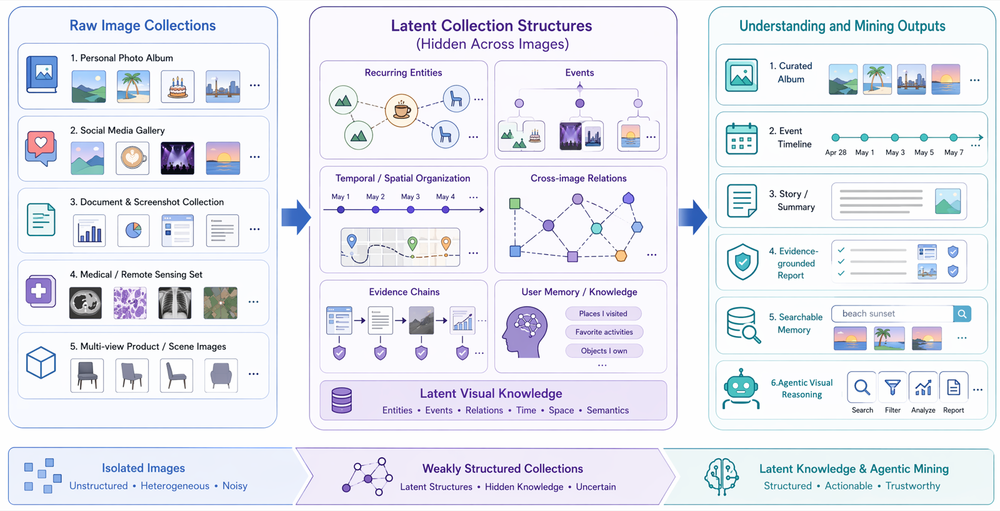
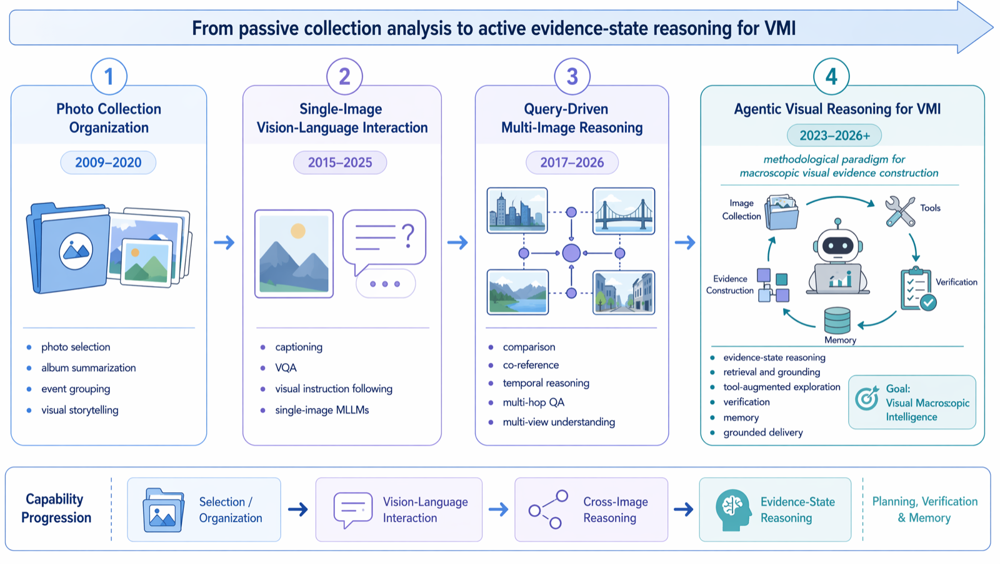
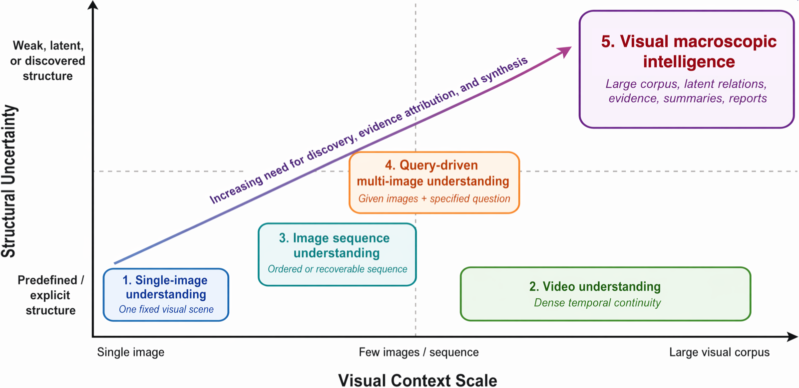

Visual Macroscopic Intelligence: A Survey from Multi-Image Understanding to Agentic Visual Reasoning
2Institute of Automation, Chinese Academy of Sciences, Shenzhen, China
3University of the Chinese Academy of Sciences, Beijing, China
4College of Computer Science, Sichuan University, Sichuan, China
5School of Mathematics and Statistics, Xi'an Jiaotong University, Xi'an, China
Abstract
Large image collections increasingly function as weakly organized visual contexts, where meaning depends on relations distributed across images. This survey develops visual macroscopic intelligence (VMI) as a framework for connecting image collection understanding, MLLM-based multi-image reasoning, visual RAG, and agentic visual evidence management. VMI treats collection understanding as a process of discovering latent structure, reasoning over cross-image evidence, and producing grounded artifacts such as summaries, timelines, reports, and memories. We review traditional image-sequence and photo-collection understanding, recent MLLM-based multi-image reasoning, latent structure induction, agentic visual reasoning, and datasets and benchmarks. The survey synthesizes an evidence-centered view of large visual contexts and identifies open challenges in scalable modeling, cross-image correspondence, faithful grounding, privacy-preserving memory, and real-world deployment.
Keywords
visual macroscopic intelligence, image collection understanding, multi-image understanding, agentic visual reasoning, multimodal large language models, multimodal agents
1 Introduction
Many visual applications now operate on collections whose internal structure is only partially given. Personal photo albums, social-media galleries, shopping records, medical studies, remote-sensing observations, multi-view scene captures, and web documents all present images as groups of related, partially related, or weakly related observations. A phone album may interleave travel photos, receipts, screenshots, and repeated portraits; a domain repository may record the same object, patient, region, or document through different viewpoints, acquisition times, sensors, or page layouts. In such collections, useful information often appears through cross-image comparison: recurring entities reveal routines, timestamps expose event boundaries, repeated observations indicate change, and text-heavy screenshots or close-up views disambiguate scenes. These collections are valuable precisely because their semantics are distributed, noisy, and sometimes only recoverable after grouping and comparison. This survey asks how systems can turn such distributed visual observations into macroscopic structure, evidence, and usable knowledge. Figure 1 summarizes the setting.
Single-image and video paradigms cover only part of this setting. Single-image tasks operate inside one visual scene, while video understanding usually assumes dense temporal continuity. The collections considered here may be ordered, unordered, or weakly structured; they may contain sparse temporal cues, noisy metadata, near duplicates, missing intermediate states, and unrelated distractors. Reasoning over them requires a constructed visual context: the relevant units, relations, and evidence often have to be inferred before a system can answer, summarize, or generate. To make the regime concrete, we locate tasks along two practical dimensions: the scale and organization of the visual context, and the degree to which the goal, relevant subset, and expected output are specified in advance. A conventional multi-image question-answering task usually sits near the low-scale, high-specification end, because a few images and a question are already given. The settings considered in this survey extend to cases where the relevant visual units, relations, and evidence must first be inferred. We use visual macroscopic intelligence to denote methods that interpret large visual contexts by discovering latent structures, reasoning over cross-image evidence, and supporting downstream tasks such as selection, summarization, storytelling, question answering, grounding, comparison, event discovery, and report generation. In this survey, these tasks are treated as goal-conditioned outputs over a shared latent macroscopic structure: given a large visual context and an explicit or implicit goal, a system infers entities, events, temporal-spatial organization, relations, evidence links, and reusable knowledge before delivering a faithful answer, summary, timeline, report, or memory.
Early research already recognized the need to organize and summarize photo collections. Systems for personal albums and social photo storytelling explored how to select representative, important, and socially engaging images from user albums [1, 2], while visual storytelling introduced sequential vision-to-language generation and provided a large-scale dataset for mapping photo streams to coherent narratives [3]. These works established several enduring themes: image collections are redundant and uneven in quality; understanding them requires diversity, saliency, chronology, and narrative coherence; and the output is often a structured description, story, or summary. Traditional systems, however, were usually designed for specific tasks and relied on restricted pipelines, handcrafted signals, or task-specific supervision, limiting their ability to support open-ended reasoning, evidence synthesis, and macroscopic knowledge construction.

Recent multimodal large language models (MLLMs) have expanded multi-image understanding from a specialized setting into a common interface for interleaved image-text contexts, multi-image instruction following, multi-view perception, and visual reasoning across images. Representative models and training frameworks such as MANTIS and LLaVA-NeXT-Interleave show that instruction tuning with interleaved multi-image data can improve co-reference, comparison, temporal reasoning, and multi-image dialogue capabilities [4, 5]. Benchmarks such as BLINK, MuirBench, MMIU, and All-Angles Bench also show that strong MLLMs still struggle with precise spatial relations, cross-image comparison, temporal ordering, cross-view correspondence, and visual distractors [6, 7, 8, 9]. Multi-image understanding has therefore become a research problem in its own right.
The neighboring literatures expose complementary pieces of the same problem. Photo-album summarization and visual storytelling treat images as collections, yet usually assume domain-specific pipelines and fixed output forms such as representative subsets or narratives. Multi-image MLLMs generalize visual-language reasoning to several images, but most benchmarks and models still operate on a small, preselected set of images with an explicitly given question. Visual-document RAG and multimodal retrieval provide mechanisms for accessing evidence, but they are typically query-centric and leave latent visual units, cross-image relations, and reusable knowledge outside the task definition. Multimodal agents contribute planning, tool use, and iterative verification, while existing agent surveys seldom take large weakly structured visual contexts as the object of interpretation. We use visual macroscopic intelligence to name the shared problem of constructing a task-relevant evidence state over a large visual context and producing grounded artifacts such as summaries, timelines, reports, answers, or memories.
VMI is broader than current multi-image MLLM evaluation because many benchmarks choose the unit of analysis for the model: the relevant images are provided, the question is specified, and the expected output is usually an answer or short explanation. Macroscopic visual settings remove some of these conveniences. A phone album may require the system to separate a trip from daily screenshots, group near-duplicate portraits, and recognize that a receipt image is relevant to a later expense query. A medical or remote-sensing archive may require comparing views or time points before deciding which change deserves reporting. These examples put context construction inside the task itself.
Agentic systems offer one operational pattern for this setting. Language agents with reasoning-and-acting loops can decompose tasks, invoke APIs, and revise plans based on observations [10, 11]. When paired with multimodal perception and visual-document RAG systems such as VisRAG [12], an agent can sample a collection, run OCR on text-heavy images, compare candidate duplicates, or invoke a detector for ambiguous cases. Selective inspection becomes useful when exhaustive visual-context processing is infeasible, and it motivates agentic visual reasoning as a system pattern for evidence-state construction in VMI.
The survey builds on adjacent areas while focusing on the layer they leave underdeveloped. CSUR's image-retrieval synthesis shows how visual collections become searchable resources [13], composed-image retrieval surveys cover image-text query composition [14], reasoning-intensive retrieval benchmarks such as BRIGHT expose multi-step evidence access in text [15], and multimodal-agent surveys summarize planning and tool-use mechanisms [16]. VMI asks how visual collections become latent structures, evidence states, and grounded artifacts, not only ranked lists or single answers. Table 1 compares these neighboring areas with the coverage of VMI.
Work on image-collection analysis, MLLM-based multi-image reasoning, visual RAG, long-context multimodal modeling, and multimodal agents has expanded rapidly since 2023, yet the results remain split across separate vocabularies, assumptions, and benchmarks. This fragmentation makes it difficult to compare capabilities or to see which parts of large visual-context reasoning are still unevaluated. The survey addresses the gap with an orthogonal taxonomy and a latent evidence-graph abstraction that connect structure discovery, evidence grounding, agentic reasoning, and benchmark design.
Figure 2 organizes the paper around a progression from multi-image understanding to agentic visual reasoning. We connect visual storytelling, album summarization, multi-image question answering, grounding, and agent-based analysis through one operational question: what capabilities are needed when the useful units of a large visual context must be inferred? Early photo-collection research, recent MLLM-based reasoning, and emerging agentic systems all touch this question, but usually under different names. Existing labels often emphasize an input format, a retrieval mechanism, an application domain, or an agent architecture; emerging applications require these components to be composed around a shared intermediate object, namely a macroscopic visual evidence state. VMI serves here as an organizing lens for weakly structured visual big data, with latent structure induction, evidence-constrained generation, and agentic exploration treated as coupled parts of the same problem.

The main contributions of this survey are as follows:
- We formulate visual macroscopic intelligence as a paradigm for interpreting large visual contexts, unifying selection, summarization, question answering, retrieval, reports, and memory as goal-conditioned transformations from latent structure to grounded artifacts.
- We synthesize a latent evidence-graph view over entities, events, relations, claims, provenance, and memory, clarifying how VMI differs from single-image understanding, video understanding, and query-driven multi-image reasoning.
- We organize traditional photo-collection analysis and recent MLLM-based multi-image understanding within the same taxonomy, showing how selection, storytelling, grounding, long-context modeling, and benchmark design correspond to different stages of VMI.
- We position agentic visual reasoning as a system pattern for VMI, and identify open challenges in scalability, correspondence, faithfulness, privacy, and evaluation.
2 Survey Scope and Literature Search Methodology
This survey is designed as a structured scoping survey rather than an exhaustive systematic review, consistent with the role of scoping and mapping reviews in clarifying concepts, boundaries, and evidence landscapes for emerging fields [19, 20, 21]. We discuss adjacent fields selectively when they contribute to macroscopic visual organization, reasoning, evidence attribution, or grounded knowledge construction. The paper set was constructed through multi-stage keyword search, backward reference tracing, and forward citation tracing over work published or released up to May 2026. To make the coverage process auditable, Table 2 summarizes the simplified scoping flow from identified records to the full coded corpus, while the supplementary material reports the full search protocol, boundary criteria, orthogonal taxonomy, quantitative publication landscape, and survey limitations.
3 Background and Problem Definition
This section formalizes the scope of visual macroscopic intelligence and clarifies its relationship to adjacent visual understanding paradigms. The goal is to establish a common vocabulary for the subsequent discussions of traditional photo-collection analysis, MLLM-based multi-image understanding, latent structure induction, and agentic visual reasoning.
3.1 Definition and Scope of Visual Macroscopic Intelligence
We define a large visual context as a set of images \(\mathcal{C}=\{I_1, I_2, \ldots, I_N\}\), where each image \(I_i\) may optionally be associated with metadata \(m_i\), such as timestamp, location, device information, filename, user tags, textual content, or album membership. Unlike a single image, \(\mathcal{C}\) provides a macroscopic visual context: useful information may be distributed across images and may only become evident after comparing, grouping, ordering, or aggregating multiple visual observations.
Visual macroscopic intelligence refers to the problem of interpreting such a context by discovering visual content, latent structures, evidential relations, and task-relevant knowledge. Image collection understanding is the core problem setting within this broader framing. This view is related to early image-mining studies, which emphasized extracting implicit patterns, semantic information, and application-level knowledge from large image repositories [22], but it further foregrounds multimodal reasoning, evidence grounding, and agentic control. The boundary is best understood as a two-dimensional continuum rather than a single threshold. Along the scale axis, VMI ranges from small curated image sets to large, heterogeneous repositories; along the task-specification axis, it ranges from explicit questions to exploratory goals for which the relevant subset, latent structure, and output artifact must first be discovered. Query-driven multi-image understanding is included as a restricted case with a small or preselected visual context and a specified goal, whereas full VMI additionally requires collection organization, evidence selection, and structure discovery before answering or generating.
Operationally, a task moves toward the VMI regime when at least one assumption of standard multi-image understanding is relaxed: the relevant image subset is not fully specified, the relations among images must be inferred, the output requires evidence attribution across images, or the result is intended to serve as a reusable artifact rather than a one-shot answer. Conversely, a two-image comparison question with preselected inputs is better viewed as conventional multi-image understanding, and a query that only retrieves visually relevant pages without inducing cross-image structure is better viewed as visual RAG. VMI therefore does not replace these areas; it describes the regime in which their components must be composed to construct macroscopic visual knowledge. Formally, a system is expected to infer a structured representation \(\mathcal{Z}=\{\mathcal{E}, \mathcal{R}, \mathcal{T}, \mathcal{S}, \mathcal{K}\}\), where \(\mathcal{E}\) denotes entities or events, \(\mathcal{R}\) denotes cross-image relations, \(\mathcal{T}\) denotes temporal or spatial organization, \(\mathcal{S}\) denotes summaries, stories, or reports, and \(\mathcal{K}\) denotes reusable knowledge or memory. The formulation emphasizes outputs that depend on relations among images, such as an event timeline, a before-after comparison, or a report with cited visual support.
3.2 A Latent Evidence-Graph View
To make the above definition operational, we use a latent evidence-graph view as an organizing abstraction rather than propose it as a new model. The abstraction is distilled from two complementary traditions: knowledge-graph and provenance models, which represent entities, relations, claims, and support records explicitly [23, 24, 25], and visual grounding resources, which link language, objects, regions, and relations in images [26, 27, 28]. Let \[ G_{\mathcal{C}}=(V,E,A), \] where \(V\) contains image nodes, entity nodes, event nodes, claim nodes, and memory nodes; \(E\) contains relations such as same-as, part-of, before/after, supports, contradicts, and complements; and \(A\) stores attributes such as timestamps, locations, OCR snippets, captions, confidence estimates, and provenance. Under this view, album summarization, visual storytelling, multi-image question answering, visual-document RAG, and agentic visual reasoning differ mainly in which subgraph is queried, which output artifact is required, and how strict the evidence constraints are. The supplementary material provides a concrete illustrative instantiation of such an evidence graph for a weakly structured personal image collection.
| Stage | Records | Main action |
|---|---|---|
| Identified | 629 | Keyword search plus backward/forward tracing. |
| Deduplicated | 487 | Merge by title, DOI, arXiv ID, and venue version. |
| Title/abstract screened | 487 | Exclude off-scope single-image, dense-video, generic-retrieval, and non-visual-agent work. |
| Full text assessed | 285 | Check VMI relevance, boundary role, and contribution type. |
| Included and coded | 205 | Final corpus for taxonomy and publication-trend coding. |
This graph view yields a unified task formulation. Given a large visual context \(\mathcal{C}\) and an explicit or implicit goal \(g\), the system first induces a task-relevant latent structure and then produces an output: \[ Z^* = \arg\max_Z p(Z \mid \mathcal{C}, g), \qquad Y^* = \arg\max_Y U(Y; g, Z). \] Here \(Z\) is a structured hypothesis about entities, events, relations, temporal-spatial organization, evidence, and memory, while \(Y\) may be a curated subset, answer, story, timeline, report, index, or memory update. Faithful macroscopic generation additionally requires an evidence constraint: \[ \forall c \in \mathrm{Claims}(Y),\; \exists E_c \subseteq \mathcal{C}: \mathrm{Support}(E_c,c) > \tau. \] That is, each factual claim in the output should be supported by sufficient image-level, region-level, metadata-level, OCR-level, or tool-derived evidence. We use this graph view in three ways: to treat diverse applications as different goals over \(\mathcal{C}\), to represent intermediate products as components of \(G_{\mathcal{C}}\), and to compare retrieval pipelines, MLLMs, visual RAG, and agents as mechanisms for inducing, querying, updating, and verifying the latent evidence graph.
3.3 Relation to Existing Visual Understanding Paradigms
Visual macroscopic intelligence is related to, but distinct from, several established paradigms in computer vision and multimodal learning. Figure 3 provides a conceptual positioning of these paradigms along two axes: the scale of visual context and the degree to which the input structure is predefined or latent.

Single-image understanding focuses on one visual scene and has driven progress in object recognition, captioning, visual question answering, grounding, and image-text pretraining, as exemplified by large-scale recognition and VQA benchmarks and by region- or transformer-based vision-language models [29, 30, 31, 32]. However, it cannot represent information that emerges only across multiple images, such as whether two photos depict the same person, whether an object changes over time, or which subset of an album best summarizes an event.
Video understanding processes dense temporal signals and is naturally suited to action recognition, event detection, and video question answering, with spatio-temporal action recognition being a representative direction [33]. Large visual contexts, however, are usually sparse and irregular. A personal album may contain only a few photos from an event, omit important intermediate states, include unrelated distractors, or mix images from different days and locations. Therefore, VMI cannot simply be reduced to video understanding.
Image sequence understanding assumes an ordered or recoverable sequence of images. Visual storytelling is a representative task in which systems generate coherent narratives from photo streams [3]. This paradigm captures temporal and narrative aspects of image collections but often presumes a relatively clean sequence and a predefined generative objective.
Multi-view geometry and robotic perception study image collections whose cross-image structure is governed by camera motion, scene geometry, and spatial consistency. Classical multiple-view geometry, structure-from-motion, photo-tourism systems, and visual SLAM establish how correspondence, pose, triangulation, and map consistency can be recovered from overlapping views [34, 35, 36, 37]. This literature is not usually framed as visual macroscopic intelligence because its primary output is geometric reconstruction or localization rather than a user-facing semantic artifact. Nevertheless, it provides a crucial technical lineage for VMI: many cross-image correspondence and multi-view reasoning failures in MLLMs are precisely failures to preserve entity identity, viewpoint relations, and spatial evidence constraints that geometric vision has long treated explicitly.
Multi-image understanding has recently become prominent in the MLLM literature. Models such as MANTIS, LLaVA-NeXT-Interleave, LongLLaVA, and Qwen2-VL are trained or adapted to handle interleaved image-text inputs, long visual contexts, videos, or multiple images [4, 5, 38, 39], while benchmarks such as MuirBench, MMIU, MMNeedle, and Visual Haystacks evaluate multi-image relations, reasoning, robustness, and long-context retrieval [7, 8, 40, 41]. Spatial and multi-view benchmarks such as VSI-Bench and All-Angles Bench further target egocentric spatial intelligence, cross-view correspondence, and camera-pose reasoning [42, 9]. These studies provide essential foundations, but they are typically query-driven: the system receives a limited number of images and answers a specific question. In our terminology, this is not a competing definition of VMI but a restricted operating point within it. We nevertheless list query-driven multi-image understanding separately because it isolates a widely studied low-scale, high-specification setting, whereas visual macroscopic intelligence emphasizes the additional cases in which the relevant question, support, and internal grouping may not be specified in advance. Table 3 summarizes these differences across adjacent paradigms.
| Paradigm | Input | Structure | Primary goal | Boundary relative to visual macroscopic intelligence |
|---|---|---|---|---|
| Single-image understanding | One image | Fixed visual scene | Recognition, captioning, grounding, or VQA | Lacks cross-image relations, evidence, and distributed knowledge. |
| Video understanding | Dense frames or clips | Temporal order and continuity | Action, event, or temporal reasoning | Assumes dense continuity, unlike sparse or irregular visual contexts. |
| Image sequence understanding | Ordered image sequence | Given or recoverable order | Story generation, temporal ordering, or sequence-level summarization | Assumes a clean sequence and predefined narrative or temporal objective. |
| Multi-view geometry / robotic perception | Overlapping views or sensor streams | Geometry-, pose-, or map-constrained structure | Reconstruction, localization, mapping, or spatial perception | Provides correspondence tools but lacks semantic artifacts and evidence-aware synthesis. |
| Query-driven multi-image understanding | A few or preselected images | Query-specified input set | Answer a predefined question or instruction | Restricted low-scale, high-specification VMI case; bypasses discovery and evidence selection. |
| Visual macroscopic intelligence | Real-world large visual context, from small sets to large repositories | Latent, weak, or noisy cross-image structure | Discover macroscopic structure, evidence, and task-relevant knowledge | Adds latent structure induction, evidence attribution, sub-context discovery, and artifact generation. |
Agentic visual reasoning is therefore discussed later as a promising implementation strategy for visual macroscopic intelligence, where tools, memory, retrieval, and iterative verification help explore large visual contexts and produce grounded outputs.
3.4 Types of Image Collections
Image collections can be categorized by the structure available to the model.
Ordered image sequences. These collections provide an explicit order, such as story images, instructional steps, screenshots of a workflow, before-after pairs, or longitudinal observations. The main challenge is to model transitions, temporal dependencies, and narrative coherence.
Unordered image sets. These collections contain multiple images without a reliable order. Examples include personal albums, product galleries, retrieved image groups, social-media posts, and multi-view object images. The system must infer grouping, relevance, redundancy, and cross-image relations from visual content or weak metadata.
Weakly structured image collections. Many real collections lie between these two extremes. They may include timestamps, GPS traces, EXIF attributes, folder names, captions, or user tags, but these signals can be incomplete, noisy, or misaligned with the semantic structure of the collection. Weak structure is particularly common in user albums and domain repositories, making it a central setting for VMI.
3.5 Latent Structures in Image Collections
The value of an image collection often lies in latent structures that are not explicit in any single image. We highlight several recurring types.
Entity structure captures recurring people, objects, documents, landmarks, products, or visual motifs. It supports tasks such as de-duplication, entity tracking, and cross-image grounding.
Event structure groups images into meaningful activities or episodes, such as trips, meetings, meals, medical examinations, construction stages, or remote-sensing changes. Event structure provides the basis for album organization, summarization, and report generation.
Temporal and spatial structure describes ordering, progression, repeated routines, geographic trajectories, or multi-view spatial configurations. These structures are crucial for before-after reasoning, longitudinal analysis, and multi-view understanding.
Relational and evidential structure identifies how images support, contradict, complement, or contextualize one another. For example, one image may provide a close-up of an object, another may show its surrounding scene, and a third may contain text evidence. Such relations are central to faithful multi-image reasoning.
Narrative and user-level structure connects visual observations into stories, memories, preferences, habits, and long-term user context. This structure is especially important for personal photo assistants and agentic systems that maintain memory across multiple interactions.
3.6 Task Formulation and Expected Outputs
Under this formulation, visual macroscopic intelligence supports a broad family of tasks. At the organization level, systems may cluster images, recover temporal order, identify events, remove redundancy, or select representative images. At the reasoning level, they may answer questions, compare images, infer changes, ground evidence, or explain relationships. At the generation level, they may produce captions, stories, summaries, reports, timelines, or personalized memories. At the system-process level, they may actively retrieve relevant images, call external tools, update memory, and iteratively refine hypotheses through explicit reasoning traces.
The rest of the survey follows this hierarchy. Section 4 reviews traditional image sequence and photo collection methods. Section 5 summarizes MLLM-based multi-image understanding. Section 6 discusses latent structure induction for VMI, and Section 7 presents agentic visual reasoning as the system paradigm for VMI.
4 Traditional Image Sequence and Photo Collection Understanding
Before the emergence of MLLM-based multi-image reasoning, a long line of research had already studied how to select, organize, summarize, and narrate image sequences and photo collections. These works were often motivated by practical applications such as personal album management, slideshow generation, photobook authoring, social photo sharing, and visual storytelling. Although their goals were narrower than the open-ended setting considered in this survey, they established important primitives for visual macroscopic intelligence: selecting representative images, reducing redundancy, grouping photos into events, modeling temporal or narrative order, and generating compact user-facing descriptions.
The deeper historical root lies in image and multimedia data mining. Early image-mining work framed image repositories as sources of implicit patterns, semantic concepts, associations, and application-level knowledge rather than as isolated recognition inputs [22]. In parallel, content-based image retrieval and large-scale visual search developed representations and indexes for searching image collections by visual similarity, local invariant features, visual vocabularies, compact descriptors, and spatial verification [43, 44, 45, 46, 47]. These techniques did not solve open-ended macroscopic reasoning, but they supplied the substrate on which VMI still depends: feature extraction, similarity search, clustering, duplicate handling, scalable indexing, and candidate evidence construction. The difference is that VMI elevates these operations from collection-access mechanisms to components of a process that induces latent structure and generates grounded artifacts.
Representative traditional task families include mining and indexing, selection and curation, event organization, temporal ordering, narrative abstraction, and story-quality or grounding analysis. Detailed discussion of these task families and the traditional-task taxonomy is provided in the supplementary material. Here we focus on how these primitives carry forward into modern visual macroscopic intelligence.
Representative traditional task families include mining and indexing, selection and curation, event organization, temporal ordering, narrative abstraction, and story-quality or grounding analysis. Detailed discussion of these task families and the traditional-task taxonomy is provided in the supplementary material. Here we focus on how these primitives carry forward into modern visual macroscopic intelligence.
4.1 From Traditional Primitives to Modern VMI Modules
Although traditional collection-analysis systems were often designed for narrow applications, many of their operations reappear as functional modules in modern visual macroscopic intelligence. Representative selection becomes evidence selection under visual-context budgets; album summarization becomes event-graph induction; redundancy removal becomes context compression and retrieval deduplication; temporal ordering becomes timeline construction and change reasoning; and visual storytelling becomes grounded artifact generation. The main difference is not that these primitives disappear, but that they are embedded in open-ended, goal-conditioned, and evidence-constrained reasoning systems.
Table 4 summarizes this technical continuity. Traditional systems usually optimized a fixed output, such as a slideshow, album summary, or story. Modern VMI systems reuse the same primitives inside larger loops for indexing, retrieval, structure induction, verification, and delivery. For example, the diversity and coverage criteria used in representative image selection become useful for selecting evidence subsets before calling an MLLM; event segmentation and album organization become hypotheses about the latent event structure of \(G_{\mathcal{C}}\); and narrative planning or scene-graph-based storytelling anticipates claim planning and evidence-graph construction.
| Traditional primitive | Original role in collection analysis | Modern VMI counterpart | Technical continuity |
|---|---|---|---|
| Representative selection | Select a compact, diverse, high-quality subset for albums, slideshows, or photobooks [1, 2]. | Evidence subset selection, retrieval reranking, context compression, and budget-aware inspection. | Coverage, diversity, quality, and importance constraints become mechanisms for deciding which visual evidence should enter an MLLM or agent context. |
| Redundancy removal and grouping | Reduce near duplicates and cluster visually or temporally related photos for concise browsing [1, 18]. | Deduplication, cluster-aware retrieval, context indexing, and candidate-set compression. | Similarity and redundancy modeling become infrastructure for scalable macroscopic visual search and for avoiding duplicate-heavy evidence sets. |
| Event segmentation and album organization | Segment personal photos into events or episodes using timestamps, metadata, visual similarity, and social context [2, 48]. | Latent event-graph induction, sub-context discovery, timeline construction, and task-specific grouping. | Event clusters become hypotheses about the latent structure \(Z\) that must be queried, revised, and verified for a user goal. |
| Temporal ordering and storyline reconstruction | Recover plausible temporal, causal, or narrative order from weakly ordered image streams [49, 50]. | Before-after reasoning, state-transition analysis, change detection, and evidence-chain construction. | Ordering models provide the precursor to temporal edges in an evidence graph and to claims about progression or change. |
| Story generation and narrative planning | Compress a short sequence into coherent story-like language or procedural descriptions [3, 51]. | Grounded reports, timelines, explanations, and user-facing macroscopic artifacts. | Narrative coherence remains useful, but modern VMI additionally requires claim-level provenance and uncertainty control. |
| Scene graphs and QA plans | Use objects, relations, scene graphs, or question-answer plans as intermediate structures for retrieval and story generation [52, 53]. | Latent evidence graphs, claim planning, verification checklists, and structured reasoning state. | Object-relation structures are extended from local narrative support to macroscopic evidence, contradiction, and provenance modeling. |
| User and social preference modeling | Personalize selection or storytelling according to user, social, or event-specific importance [2, 18]. | User-conditioned retrieval, persistent visual memory, preference-aware delivery, and privacy-sensitive personalization. | Preference signals become long-term context that must remain grounded, editable, and privacy-aware. |
The continuity in Table 4 also clarifies the role of MLLMs. MLLMs change the interface and reasoning layer, but large visual contexts still require candidate selection, redundancy control, event grouping, metadata-aware indexing, temporal organization, and evidence attribution. The move to MLLM-based VMI is best understood as functional recontextualization: traditional primitives become reusable modules inside retrieval-augmented, evidence-constrained, and agentic reasoning workflows.
4.2 Limitations of Traditional Pipelines
Across the above task families, traditional approaches commonly introduce explicit structures before prediction. Image collections may be represented as hierarchies for scalable selection, clusters for event organization, rankings for representative image selection, sequences for temporal modeling, or graphs for object-relation reasoning. These structures make the problem tractable and interpretable: they reduce the search space, impose coverage or diversity constraints, and expose relations among images that are otherwise implicit. However, the same design also constrains systems to predefined objectives and output formats.
Traditional image sequence and photo collection methods provide important foundations, but they also have several limitations. First, most systems are task-specific: a method designed for photo selection cannot directly answer open-ended questions, and a narrative generation model is not necessarily able to ground evidence or compare arbitrary images. Second, many approaches depend heavily on handcrafted features, metadata, or constrained supervision, which may be unreliable in real collections. Third, their semantic abstraction is limited compared with recent MLLMs; complex entity relations, implicit events, user preferences, and evidential chains are difficult to model with fixed pipelines. Finally, traditional systems are largely passive: they do not actively inspect a collection, call external tools, retrieve supporting images, or maintain long-term memory.
These limitations motivate the move from collection-specific pipelines to MLLM-based multi-image understanding. Modern models provide a more general interface for reasoning over multiple images, following instructions, grounding answers, and integrating visual evidence with language. The move is still cumulative: the selection, grouping, ordering, and planning operations reviewed above remain necessary for indexing large collections, constructing candidate evidence, and controlling visual context. The next section reviews how recent MLLM research expands these foundations into more flexible multi-image reasoning systems.
5 Multi-Image Understanding in the MLLM Era
Multimodal large language models (MLLMs) move large visual contexts closer to general-purpose visual-language interaction. Earlier collection pipelines typically required separate models or heuristics for selection, summarization, storytelling, and retrieval. A single MLLM interface can in principle receive multiple images and natural-language instructions, then perform comparison, question answering, grounding, summarization, or dialogue. This unified interface is central to the move from traditional image-sequence analysis to modern visual macroscopic intelligence, but the harder question is whether it preserves cross-image correspondences, rejects distractors, reasons over temporal order, and selects evidence faithfully as the number and heterogeneity of images grow.
Table 5 summarizes representative directions in MLLM-based multi-image understanding. The table is organized by capability rather than by benchmark name, because the goal of this section is to characterize the methodological transition. A more detailed treatment of datasets and evaluation protocols is deferred to Section 8.
| Direction | Representative objective | Core capability | Representative works |
|---|---|---|---|
| MLLM foundations | Connect visual encoders with language models and support visual instruction following. | General visual-language interaction; single-image reasoning; multimodal dialogue; grounding-aware alignment. | Flamingo, BLIP-2, LLaVA, Kosmos-2, Qwen2-VL, InternVL2.5 [54, 55, 56, 57, 39, 58] |
| Interleaved training | Train models to handle interleaved image-text contexts and multiple visual inputs. | Image identity preservation; co-reference; comparison; multi-image dialogue. | MANTIS, LLaVA-NeXT-Interleave, mPLUG-Owl3, MMDU, OBELICS [4, 5, 59, 60, 61] |
| QA and benchmarked reasoning | Answer questions whose evidence is distributed across multiple images. | Visual aggregation; multi-hop reasoning; robustness to distractors. | BLINK, MIRB, ReMI, MuirBench, MMIU, MMRB [6, 62, 63, 7, 8, 64] |
| Temporal / transformation reasoning | Test whether models understand order, change, and state transitions across images. | Event-order reasoning; before-after comparison; transformation inference. | Mementos, TempVS/Burn After Reading, VisualTrans [65, 66, 67] |
| Spatial and multi-view reasoning | Evaluate or improve geometric consistency across viewpoints, spatial layouts, and camera poses. | Cross-view correspondence; spatial relation reasoning; 3D scene awareness. | All-Angles Bench, VSI-Bench, SpatialVLM [9, 42, 68] |
| Grounding and correspondence | Locate evidence, compare images, or identify relations across visual inputs. | Pixel/region grounding; cross-image matching; visual cue linking; evidence localization. | PRIMA, MC-Bench, GeM-VG, MMVM [69, 70, 71, 72] |
| Long-context modeling | Process long image sequences, mixed image-video contexts, or text-rich visual documents. | Long visual context; scalable visual tokens; sparse evidence search. | Gemini 1.5, MMNeedle, LongLLaVA, Visual Haystacks, visual-document RAG [73, 40, 38, 41, 12] |
| Reasoning post-training and domains | Improve or evaluate multi-image reasoning in specialized tasks and domains. | CoT supervision; RL-based visual comparison; medical grounding; math and quality comparison. | MAmmoTH-VL, Insight-V, MiCo, MedSG-Bench [74, 75, 76, 77] |
The detailed literature supporting each direction in Table 5 is provided in the supplementary material. The main text uses these directions to show a concrete boundary: MLLM research has made comparison, co-reference, temporal reasoning, grounding, and long-context visual interaction measurable, while most evaluations still use small, query-driven settings with preselected evidence.
5.1 What Multi-Image MLLMs Solve and What They Leave Open
MLLM-based multi-image understanding solves a practical interface problem that earlier collection pipelines did not address well. A model can compare a small number of images, follow multi-image instructions, and produce explanations through one language interface, instead of requiring a separate task-specific model for each output format. Recent instruction-tuned models and benchmarks make capabilities such as co-reference, visual comparison, multi-hop question answering, and distractor robustness easier to measure. In this respect, the field has moved beyond treating multiple images as independent captions.
The limitation is visible in the evaluation setup. Most systems perform best when the relevant images are already provided, the question is already specified, and the answer can be compressed into a short text choice or span. They remain unreliable at deciding which images should be inspected, whether two visual instances are truly the same entity, which intermediate evidence is necessary, or when the available collection is insufficient. A model may answer a curated multi-image question correctly while still failing to build a reusable evidence state for an album, medical case, visual document corpus, or remote-sensing archive. Common failure modes include identity conflation, order sensitivity, shortcut use from captions or dataset priors, hallucinated cross-image links, and overconfident answers when distractor images contradict the apparent solution.
Benchmark design can hide these weaknesses. Small image counts, multiple-choice answers, synthetic layouts, and pre-filtered evidence may resemble VMI while bypassing retrieval, grouping, uncertainty, and provenance. Benchmarks that do not check which image or region supports an answer cannot distinguish genuine cross-image reasoning from lucky aggregation or language-only inference. For VMI, MLLMs are powerful reasoning modules that need surrounding mechanisms for evidence selection, correspondence, verification, and calibrated refusal.
6 Latent Structure Induction for Visual Macroscopic Intelligence
The previous section reviewed the common MLLM setting in which a model receives several images and responds to a user-specified question or instruction. VMI starts from less prepared inputs. A phone album may contain travel photos, screenshots, receipts, and repeated portraits without an explicit task; a medical study may combine current and historical scans; a remote-sensing archive may contain repeated observations of the same region; and a visual document repository may mix figures, tables, scanned pages, and screenshots. In each case, the system must determine meaningful units of analysis before producing an answer or report.
We treat latent structure induction over \(G_{\mathcal{C}}\) as a core problem of VMI. The system must infer which images form candidate events, which visual instances refer to the same entity, which observations are temporally or spatially comparable, and which images can support or contradict a generated claim. These events, entities, and sub-contexts are uncertain hypotheses induced from metadata, visual similarity, OCR, retrieval results, and model predictions; they may need revision when new evidence or a different user goal is introduced. Clusters in this setting behave less like final partitions and more like editable hypotheses: an agentic VMI system may create, merge, split, relabel, or retire event and entity clusters as observations and tool outputs update the evidence graph. The process turns raw image collections into structured knowledge and user-facing outputs through representation building, grouping, cross-image comparison, evidence attribution, and synthesis; a more detailed pipeline view is provided in the supplementary material. Earlier image-mining research provides an important lineage [22], while VMI adds natural-language interaction, open-ended task discovery, multimodal reasoning, and faithful evidence construction over visual records. X-Cluster illustrates one recent step in this direction by discovering multiple natural-language grouping criteria and inducing semantic partitions over unstructured image collections [78]. In the VMI framing, such language-mediated semantic partitions are one form of latent structure; the broader evidence-graph view additionally requires entity and event links, provenance, and claim-level support.
6.1 From Query-Driven Understanding to Latent Structure Induction
The distinction between query-driven multi-image understanding and VMI is fundamental. In query-driven settings, the task is specified before inference: the model receives a question, a small number of images, and an expected answer format. VMI is more under-specified. The system may need to infer whether the useful output should be an event cluster, a timeline, a list of documents, a change report, or a set of images requiring human review.
The model's role changes accordingly. A query-driven model mainly answers; a macroscopic reasoning system first defines the subproblem. In the notation of Section 3.2, it must infer which part of \(G_{\mathcal{C}}\) should be constructed and queried for the current goal. For example, in a personal album, the same collection could support a travel diary, a search index for receipts, or a summary of recurring family members. The challenge is to choose the right abstraction before generating language: an event graph for a diary, an evidence index for receipts, an entity graph for recurring people, or a memory graph for long-term personalization.
6.2 Reasoning Targets in Large Visual Contexts
The information that can be reasoned over and extracted from large visual contexts spans multiple semantic levels. At the content level, the system extracts people, objects, scenes, text, landmarks, products, and visual quality cues. These elements provide the atomic observations for later reasoning. At the event level, the system groups images into meaningful episodes such as trips, meetings, meals, celebrations, medical examinations, construction stages, or environmental observations. Event-level structure is often the first step toward making a large collection navigable.
At the temporal and spatial level, the system infers order, progression, repeated routines, geographic trajectories, or longitudinal changes. This is particularly important for before-after reasoning, medical follow-up, remote-sensing monitoring, and life-log analysis. At the relational and evidential level, the system discovers links among images: whether two images depict the same entity, whether one image provides a close-up of another, whether a screenshot contains textual evidence for a visual claim, or whether two images show a change in state. Such relations are crucial for faithful reasoning because claims must be tied to the images that support them.
Finally, at the narrative and user level, a system may derive stories, reports, personal memories, user preferences, or long-term behavioral patterns. This level connects VMI to human-facing applications. Producing a travel diary, organizing a medical case, or remembering recurring people requires the system to decide which observations should persist and which should remain local to the current task.
6.3 Core Capabilities for VMI
VMI requires capabilities that are broader than standard multi-image QA. Representation building maps images into visual embeddings, metadata records, OCR text, captions, or document-layout features. This requirement is related to image retrieval [13], but the retrieval target is often contextual: a user may search for “the receipt from the beach trip,” which depends on event context as much as visual similarity. Large-scale vision-language pretraining and multimodal retrievers such as CLIP, BLIP, SigLIP, and ColPali provide foundations for this step [79, 80, 81, 82]. Interactive query rewriting, composed image retrieval, visual RAG, and deep image search further show how retrieval can incorporate user intent and visual context at different evidence granularities [83, 14, 12, 84].
A second capability is collection structuring. Earlier work on album summarization, image importance, and curation already studied how to group photos into events, reduce near duplicates, and select representative images [1, 85, 18]. Recent language-guided collection organization extends this idea from fixed album operations to open-ended semantic discovery: for example, X-Cluster first proposes criteria such as activity, location, mood, or food-related attributes, and then groups the same image collection under each criterion [78]. Modern VMI systems can reuse such criteria proposal, grouping, and labeling operations as intermediate hypotheses inside broader analysis pipelines. In macroscopic settings, structuring defines the units over which later retrieval, summarization, comparison, and verification operate.
A third capability is cross-image inference: resolving entities, comparing states, recovering order, or identifying contradictions. This builds on multi-image and transformation reasoning benchmarks discussed in Section 5 [62, 63, 86], but must handle distractors and missing intermediate observations. Unlike structuring, the goal is not only to organize the collection, but to derive claims that depend on relationships across multiple images.
Finally, collection-level outputs must be grounded and usable. An inferred event, timeline, or report should point to supporting images or regions, especially in medical analysis, remote sensing, and visual-document settings. Textual summary generation from cohesive image sets provides an early example of this output layer [87], but broader macroscopic tasks may require a staged process: form groups, describe each group, compare groups, verify evidence, and only then produce an overall report.
6.4 Application Scenarios
Personal photo assistants are a natural application of VMI. A system can help users organize albums, identify trips and events, generate diaries, retrieve images by semantic memory, or summarize recurring people and places. This setting inherits concerns from lifelogging and personal-database research: the collection is longitudinal, weakly structured, and valuable precisely because it links images with time, activity, location, and memory cues [88, 89]. Recent work on deep image search makes this setting more explicit by treating retrieval over personal visual histories as an agentic exploration problem, where the system must use temporal, spatial, entity-level, and event-level context to locate images that may not be identifiable from isolated visual content alone [84]. Life-log, social multimedia, and wearable-camera scenarios similarly require extracting routines, activities, and long-term patterns from large volumes of weakly structured images, with large-scale resources such as YFCC100M providing natural user-photo hierarchies for studying visual histories [90]. Exploratory collection analysis also supports dataset auditing, social-media trend analysis, and generative-model bias diagnosis, where the goal is to discover which semantic dimensions and subgroups are present before deciding what downstream intervention or report is needed [78].
Domain-specific applications further highlight the need for VMI. In medical settings, multiple images may correspond to different views, modalities, or time points, and the system must compare them to identify changes or evidence; large radiology datasets such as MIMIC-CXR and CheXpert show how images, reports, uncertainty labels, and expert annotations become coupled evidence sources rather than independent images [91, 92]. In remote sensing, collections may contain repeated observations over geographic regions, where goals range from retrieving semantically matched scenes to detecting temporal changes or summarizing environmental events; this makes cross-modal alignment, geo-registration, sensor variation, and change localization part of the evidence schema [93, 94, 95, 96]. In visual document repositories, useful information may be distributed across figures, tables, scanned pages, screenshots, slide decks, charts, and document order, requiring text-rich image understanding, layout-aware provenance, visual retrieval, and evidence synthesis [97, 98, 99, 12, 100]. These document-like contexts are a distinctive VMI case because faithful outputs must preserve OCR uncertainty, page provenance, and links between generated claims and supporting visual evidence. A more detailed comparison of domain-specific macroscopic visual settings is provided in the supplementary material.
6.5 From Collection Organization to Macroscopic Judgment
VMI reframes visual understanding around the structure of the large visual context. Retrieval, clustering, metadata indexing, event grouping, and visual-document search can already make large collections more navigable; traditional album analysis also shows that representative selection and temporal organization are useful primitives. These methods reduce an unbounded image repository into candidate entities, events, relations, and evidence sets, giving VMI its operational substrate.
The harder step is judging whether the discovered structure supports the user's goal. A system may cluster an album, retrieve visually similar images, or summarize an event while still missing semantic continuity, selecting a receipt from the wrong trip, or producing a fluent report whose key claims lack image support. The hardest unsolved capabilities are latent task discovery, entity and event linking under ambiguity, evidence sufficiency estimation, contradiction handling, and deciding when a collection lacks enough information to support a conclusion.
Evaluation shortcuts can make the problem look easier than it is. A clean album with reliable timestamps, a retrieved top-\(k\) image set, or a fluency-scored summary does not test the same capabilities as a heterogeneous phone history with uncertain relevance and rare evidence. Common failure modes include salient-cluster bias, duplicate-heavy summaries, metadata shortcutting, missed minority events, and error propagation from early grouping decisions. Future systems should expose their inferred macroscopic structure and treat organization as a hypothesis to be verified, not as a fixed preprocessing step before generation.
7 Agentic Visual Reasoning
The preceding sections identify a systems problem for VMI: useful information may be split across images, metadata, OCR text, and relations that are not annotated in advance, and exhaustive inspection is often infeasible. We formulate agentic visual reasoning as sequential decision-making for constructing, querying, and verifying the latent evidence graph of a large visual context under a human- or application-defined objective. The term agentic is used here in the standard sense of a policy that observes a state, selects actions, receives observations from an environment or tool interface, updates its state, and decides when to stop. Tool use, memory, and verification are functional mechanisms for this policy, not definitions by themselves. For structure induction, an agent can propose candidate event, entity, and sub-context hypotheses, inspect uncertain links, invoke retrieval, OCR, grounding, or comparison tools, and update the evidence graph before producing the final artifact. Compared with static collection organization, the agentic setting makes reasoning iterative: the system chooses what to inspect next, which tools to invoke, which structural hypothesis to revise, and when the accumulated evidence is sufficient for grounded delivery.
7.1 Agentic Problem Setting
Given a large visual context \(\mathcal{C}=\{(I_i,m_i)\}_{i=1}^{N}\), where \(I_i\) denotes an image and \(m_i\) denotes optional metadata such as time, location, OCR text, captions, or user annotations, the task is to produce a structured output \(Y\) for a reasoning goal \(g\). The goal \(g\) can be explicit, such as summarizing a personal album, constructing a travel timeline, detecting changes in remote-sensing observations, or generating a medical case report. It can also be exploratory, expressed by a seed instruction such as “find valuable information in this collection.” In that case, the agent proposes candidate targets and turns them into operational subgoals. Agentic visual reasoning is goal-conditioned reasoning with a maintained evidence state, not unconstrained visual browsing.
A minimal task instance can be written as a partially observable interaction tuple \[ (\mathcal{C}, g, \mathcal{T}, \mathcal{S}, \mathcal{A}, \mathcal{O}, B), \] where the visual context and goal define the environment. Here, \(\mathcal{T}\) provides available tools; \(\mathcal{S}\) is the internal evidence state space; \(\mathcal{A}\) contains retrieval, inspection, comparison, verification, memory, and delivery actions; \(\mathcal{O}\) contains observations returned by images, metadata, users, or tools; and \(B\) denotes constraints such as computation budget, privacy policy, interaction cost, and attribution requirements. We reserve agentic for settings with four operational conditions: partial observability, budgeted action selection, provenance-carrying observations, and an explicit stopping condition. Tool use or retrieval alone is insufficient without a maintained evidence state. The desired output \(Y\) may include event clusters, entity lists, timelines, reports, evidence graphs, searchable indexes, or persistent memories. Traceability is required: generated claims should be linked to supporting images, regions, metadata, or tool observations.
These requirements distinguish agentic visual reasoning from three related settings. It may locate the relevant subset before multi-image QA, continue beyond returning images in retrieval, and maintain a visual evidence state that general multimodal-agent work often leaves implicit: what has been found, why it matters, which observations support it, which hypotheses remain uncertain, and how confidence changes as new evidence is inspected.
7.2 Evidence-State Reasoning for Agentic Visual Reasoning
We summarize the methodology of agentic visual reasoning as an evidence-state reasoning loop. At step \(t\), the agent maintains a state \[ s_t=(H_t,Z_t,Q_t,B_t), \] where \(H_t\) denotes inspected evidence and tool observations, \(Z_t\) denotes the current hypothesis about the latent evidence graph, \(Q_t\) denotes unresolved questions or uncertain links, and \(B_t\) denotes constraints such as computation budget, privacy policy, interaction cost, and attribution requirements. The agent selects an action \[ a_t=\pi(s_t,g,\mathcal{T}), \] where \(\pi\) is the agent policy and \(\mathcal{T}\) is the available tool set. It then receives an observation \(o_t\), updates the state, and stops when evidence is sufficient, the budget is exhausted, or the remaining uncertainty should be surfaced to the user. The loop connects to ReAct-style reasoning-action methods, but the state here persists beyond prompt-level action interleaving and records macroscopic visual evidence; related deliberation and self-correction paradigms are useful only when their intermediate states are grounded in retrievable visual evidence [10, 101, 102]. Existing retrieval, tool-use, visual-programming, and memory-augmented systems suggest an Index–Goal–Tool–Reason–Verify–Deliver capability decomposition. The decomposition is not tied to a specific model; it summarizes functional modules that repeatedly appear in systems for large-scale reasoning over visual contexts.

First, indexing converts raw images into searchable and traceable context representations. This module stores image identifiers, metadata, visual embeddings, OCR results, captions, document-layout features, entity candidates, quality signals, and coarse clusters. It provides the substrate for retrieval, deduplication, organization, and evidence citation.
Second, the system receives a goal. The goal may be an explicit user request, such as “summarize this album” or “find evidence of construction progress.” It may also be an open-ended seed instruction, such as “find valuable information in this collection,” under which the agent identifies candidate reasoning targets from the indexed context. The same capability pattern can be reused across goals because the agent maps either explicit goals or discovered targets into intermediate products: candidate events, entities, comparisons, missing evidence, output fields, or verification checks.
Third, the system exposes a pluggable tool space. A tool can be abstracted as \[ \tau_k: x_k \mapsto (o_k, \kappa_k, \gamma_k, \rho_k), \] where \(x_k\) is the input, \(o_k\) is a structured observation, \(\kappa_k\) is the execution cost, \(\gamma_k\) is a confidence or uncertainty estimate, and \(\rho_k\) records provenance such as image IDs, regions, timestamps, or tool versions. This interface makes tool outputs usable as evidence rather than as ungrounded text. Minimal tools include retrieval, OCR, captioning, MLLM inspection, object or face detection, segmentation, referential grounding, clustering, pairwise comparison, temporal or geo-spatial reasoning, contradiction checking, and output generation; recent general-purpose segmentation and grounding tools make such modular evidence extraction more realistic, but they also need provenance and uncertainty records when used inside an agent [103, 104, 105].
Fourth, the agent performs autonomous reasoning. The abstract state \(s_t=(H_t,Z_t,Q_t,B_t)\) is instantiated as concrete intermediate products: inspected image IDs, tentative claims, unresolved comparisons, tool outputs with confidence, and the remaining budget. The action \(a_t\) may query the index, select uncertain images, invoke OCR or detection, compare two sub-collections, or ask for human confirmation. After receiving an observation \(o_t\), the agent updates the state: \[ s_{t+1}=U(s_t,a_t,o_t). \] This loop replaces one-pass processing with selective, evidence-aware reasoning over the context.
Fifth, verification checks whether the inferred information is sufficiently supported. Verification may examine evidence coverage, cross-tool consistency, entity or event merging errors, temporal plausibility, contradictory images, and unsupported claims. Human feedback is not required for every reasoning task, but can serve as an optional verification mechanism when the system faces ambiguous identities, high-stakes domain conclusions, or sensitive inferences that should not be finalized solely by the agent.
Finally, delivery converts the verified state into a user-facing artifact or downstream action. The output may be a curated subset, timeline, album story, case report, inspection log, structured database, or reminder derived from the context. When appropriate, reusable information can be written back to memory for future tasks over the same collection or user history.
| Module | Function in agentic visual reasoning | Representative mechanisms | Main failure modes |
|---|---|---|---|
| Index | Build searchable, organized, and traceable representations of the visual context. | Embeddings; metadata/OCR indexing; caption caches; clustering; visual-document indexes; VisRAG-style retrieval [12, 100]. | Missing metadata, biased embeddings, noisy OCR, weak provenance. |
| Goal | Specify an explicit objective or seed an open-ended search for valuable information, then map it into reasoning targets. | User instructions; open-ended seed prompts; candidate target proposal; task decomposition; evidence checklist; adaptive stopping criteria. | Ambiguous goals, low-value targets, over-decomposition, misaligned utility. |
| Tool | Provide specialized operations that can be invoked on images, regions, pairs, metadata, or retrieved subsets. | Retrieval; OCR; detection; face grouping; segmentation; geo-temporal analysis; visual programming [106, 107, 108]. | Tool errors, incompatible interfaces, cost explosion, cascading failures. |
| Reason | Iteratively choose actions, inspect evidence, compare images, and update the reasoning state. | ReAct-style reasoning-action loops; controller agents; query rewriting; deep image search [10, 83, 84]. | Query drift, missed evidence, inefficient exploration, spurious relations. |
| Verify | Check whether claims are sufficiently supported and internally consistent. | Image-level citation; region grounding; contradiction checking; uncertainty labels; human confirmation. | Hallucinated evidence, false confidence, unverifiable summaries. |
| Deliver | Produce a user-facing artifact or downstream action and optionally update reusable memory. | Curated image sets; summaries; timelines; alerts or reminders; case reports; evidence graphs; entity/event memory [109, 110]. | Stale memory, privacy leakage, misleading abstraction, loss of uncertainty. |
Table 6 summarizes this pattern as a capability decomposition rather than a prescribed architecture. Across the cited work, the common property is a controllable loop that keeps intermediate visual observations available for later checking and reuse.
7.3 Positioning Existing Work in the Capability Decomposition
Existing studies can be reinterpreted as partial evidence for this capability decomposition. ReAct establishes a prompt-level reasoning-action-observation loop, while Toolformer studies how language models can learn to call tools [10, 11]. These works provide the general agentic control pattern, but their default problem setting does not maintain a persistent macroscopic visual state, evidence graph, provenance store, or memory-correction mechanism. Embodied and robotic systems such as SayCan, PaLM-E, and Voyager show how language-conditioned policies can connect perception, action, affordances, and open-ended exploration [111, 112, 113]. For VMI, their main lesson is not robotics itself, but the need to bind high-level plans to grounded observations and executable tools. Surveys of large multimodal agents further describe systems that integrate multimodal perception, planning, tool use, and interaction [16]. In contrast, the focus here is narrower but stricter: an agentic VMI system is evaluated by how its policy searches, updates, verifies, and delivers grounded knowledge from a large visual context, not merely by whether it can invoke tools during a dialogue.
Multimodal tool-use systems instantiate the Tool and Reason modules. Visual ChatGPT, HuggingGPT, Chameleon, VisProg, and ViperGPT show how language-model controllers can route subtasks to external visual experts or executable programs [106, 114, 115, 107, 108]. Most, however, are designed for single images, small image sets, or general multimodal interaction rather than persistent macroscopic reasoning.
Retrieval-centered methods mainly cover the Index and Reason capabilities. Interactive query rewriting, composed image retrieval, visual-document RAG, and VisRAG-style methods provide mechanisms for locating visual evidence in large repositories [83, 14, 12, 100]. Deep Image Search is especially close to agentic visual reasoning because it treats personal visual search as an iterative exploration process over contextual clues and image collections [84]. In the capability decomposition, it is a retrieval-centered case whose primary deliverable is a set of relevant images; VMI extends this direction toward verified outputs, evidence graphs, downstream actions, and reusable memory.
Autonomous visual information seeking also fits this view. AVIS demonstrates that an agent can decide which external resources to consult and how to refine visual information seeking based on intermediate observations [116]. In the capability decomposition, such work contributes to the policy for choosing reasoning actions. However, VMI additionally requires persistent indexing, evidence provenance, verification, and final synthesis over a large image repository.
Memory-augmented agents contribute to the Deliver and state-management components. Classical cognitive models distinguish short-term control processes from longer-term stores [109], while recent agent systems explore procedural memory and skill accumulation [110, 117]. For visual macroscopic intelligence, memory is useful only when it remains grounded: entity, event, and user-preference memories should preserve provenance, uncertainty, and correction mechanisms.
7.4 Benefits of the Agentic Reasoning Paradigm
The literature suggests that agentic reasoning is most useful when a large visual context is treated as a searchable evidence space that can be explored over time. This brings several practical advantages. First, it improves scalability: indexed representations and selective retrieval allow the system to reason over collections that exceed the visual context window of current MLLMs. Second, it enables adaptive computation: the agent can spend more effort on images that are uncertain, representative, contradictory, or central to a claim, while avoiding uniform processing of every item. Third, it supports specialized perception and reasoning: OCR, detection, face grouping, geo-spatial alignment, visual-document retrieval, and MLLM reasoning can be invoked only when relevant, instead of being compressed into a single monolithic model call.
The reliability benefit comes from keeping intermediate observations with provenance. Final claims can be traced back to specific images, regions, metadata fields, or tool outputs, which makes verification more concrete. The modular capability decomposition also allows different goals, tool sets, verification criteria, and output formats to be substituted without redesigning the whole system. Memory adds a cumulative dimension: repeated analysis of a personal album, domain archive, or visual document repository can gradually build grounded knowledge, instead of producing isolated summaries that are discarded after each interaction.
7.5 Agentic Reasoning: Gains, Failure Modes, and Accountability
Agentic visual reasoning addresses a concrete systems problem: no current MLLM can exhaustively inspect and reason over a large, heterogeneous visual context in one pass. Indexing, retrieval, tool use, state maintenance, and verification allocate computation selectively and keep intermediate observations available for later checking. The main gain over direct multi-image prompting is procedural: the system can search, compare, revise, and cite evidence before producing the final artifact.
The same procedure can fail in ways that answer-only benchmarks may not reveal. An agent may retrieve the wrong subset, follow an early mistaken hypothesis, call tools that confirm its assumptions, or stop before inspecting contradictory evidence. Common failure modes include query drift, visually salient but low-value exploration, cascading tool errors, circular self-verification, stale or overgeneralized memory, and privacy leakage from persistent indexes. These failures affect the reasoning trajectory and stored evidence state, not only the final response.
Current agent and visual-RAG evaluations may reward orchestration when the relevant evidence is easy to retrieve, tool outputs are treated as ground truth, or success is measured only by final answer accuracy. Harder evaluations should include missing evidence, conflicting observations, ambiguous identities, noisy OCR, irrelevant but visually attractive distractors, and tasks where abstaining or asking for clarification is correct. The unresolved capability is trustworthy policy: when to search, what to verify, how much evidence is enough, what to remember, and what should be forgotten.
VMI systems should therefore be designed as accountable evidence systems. They should expose retrieved images, intermediate claims, provenance, uncertainty, and memory updates; distinguish observations from inferences; and allow users or domain experts to correct macroscopic structure. Without these mechanisms, agentic visual reasoning risks becoming a more complex way to hallucinate over larger visual repositories.
8 Datasets, Benchmarks, and Evaluation
Datasets and benchmarks determine how the community operationalizes visual macroscopic intelligence. They define the visual inputs, target outputs, and forms of reasoning that receive credit. Most existing resources evaluate partial capabilities needed for VMI, such as sequence-level narration, multi-image comparison, grounding, long-context retrieval, and visual-document evidence search. We treat them as component-level proxy evaluations: useful for diagnosing which parts of the VMI pipeline are currently measurable, yet insufficient for evaluating the full transformation from a weakly structured large visual context into a grounded, useful, and accountable knowledge artifact.
Table 7 provides a capability-level panorama of these proxy evaluations, while a representative resource landscape is provided in the supplementary material. The trajectory runs from task-specific evaluation on photo streams and albums to query-driven multi-image reasoning benchmarks for MLLMs, with newer resources beginning to expose the limits of answer-only evaluation through grounding, long-context retrieval, and agentic reasoning settings.
| Proxy benchmark family | Multi-image | Cross-image relation | Retrieval | Latent structure | Evidence grounding | Artifact output | Agentic process | Memory/privacy |
|---|---|---|---|---|---|---|---|---|
| Story / album / curation | \(\circ\) | \(\circ\) | – | \(\circ\) | – | \(\bullet\) | – | – |
| Open-ended semantic clustering | \(\bullet\) | \(\circ\) | – | \(\bullet\) | – | \(\circ\) | – | – |
| Multi-image QA / dialogue | \(\bullet\) | \(\bullet\) | – | – | \(\circ\) | – | – | – |
| Temporal / transformation | \(\bullet\) | \(\bullet\) | – | \(\circ\) | – | – | – | – |
| Multi-view / spatial | \(\bullet\) | \(\bullet\) | – | \(\circ\) | \(\circ\) | – | – | – |
| Grounding / correspondence | \(\bullet\) | \(\bullet\) | – | – | \(\bullet\) | – | – | – |
| Long-context retrieval | \(\bullet\) | \(\circ\) | \(\bullet\) | – | \(\circ\) | – | – | – |
| Visual-document RAG | \(\bullet\) | \(\circ\) | \(\bullet\) | – | \(\bullet\) | \(\circ\) | \(\circ\) | – |
| Agentic visual search | \(\bullet\) | \(\circ\) | \(\bullet\) | \(\circ\) | \(\circ\) | \(\circ\) | \(\bullet\) | \(\circ\) |
| Full VMI benchmark | \(\bullet\) | \(\bullet\) | \(\bullet\) | \(\bullet\) | \(\bullet\) | \(\bullet\) | \(\bullet\) | \(\bullet\) |
8.1 Traditional Sequence and Collection Datasets
Early resources evaluate image collections through concrete user-facing outputs. Visual storytelling datasets such as VIST ask a model to convert a photo stream into a coherent narrative rather than a set of independent captions [3]. RecipeQA extends this idea to procedural image-text sequences, where answering questions requires understanding multi-step cooking instructions across images [118]. Album summarization and photo selection tasks ask a model to retain representative, diverse, and important images from redundant collections [1, 2]. Multi-image summarization further studies textual summaries for cohesive image sets [87]. These tasks are valuable because they already treat the collection, rather than the individual image, as the unit of evaluation.
However, their evaluation protocols are usually output-specific. Storytelling and summarization systems are often judged by fluency, coherence, relevance, human preference, and automatic metrics borrowed from machine translation, text summarization, and image captioning, such as BLEU, ROUGE, and CIDEr [119, 120, 121]. Selection systems are judged by coverage, diversity, aesthetics, importance, or agreement with human-selected subsets. Such criteria capture important aspects of collection-level utility, but they provide limited supervision for evidence attribution. A story or summary can be fluent while introducing unsupported events, and a selected subset can be diverse while omitting images that are crucial for later reasoning.
Open-ended semantic clustering benchmarks make latent structure more explicit. COCO-4C and Food-4C annotate multiple grouping criteria and cluster labels for the same image collection, enabling evaluation of whether a system can discover natural-language organization principles and induce criterion-specific semantic partitions [78]. This is an important proxy for VMI because it tests structure discovery before downstream reasoning. However, it still covers only one output form: semantic partitions. It does not by itself evaluate claim-level provenance, evidence sufficiency, iterative verification, or whether the discovered structure supports a user-facing artifact such as a report, timeline, or memory.
8.2 MLLM-Based Multi-Image Benchmarks as Query-Driven Proxies
Recent MLLM benchmarks recast multi-image understanding as perception, question answering, and reasoning over several visual inputs. Earlier resources such as NLVR and Spot-the-Diff evaluated relational statements and image-pair differences [122, 123]. Newer benchmarks extend this setting to visual comparison, distributed evidence, distractors, unanswerable cases, multi-turn dialogue, and image-sequence reasoning, as in BLINK, MIRB, ReMI, MuirBench, MMIU, MMDU, MMMU, MM-Vet, and Mementos [6, 62, 63, 7, 8, 60, 124, 125, 65]. Spatial and embodied benchmarks such as ScanQA, SQA3D, and All-Angles Bench further test grounded 3D QA, spatial reasoning, and multi-view understanding [126, 127, 9].
These benchmarks reveal failure modes hidden in single-image VQA: incorrect entity binding, weak comparison, poor distractor rejection, hallucinated multi-hop evidence, and unreliable multi-view consistency. Yet they remain closer to query-driven reasoning than to VMI: the question is given, candidate evidence is usually included, and success is often answer accuracy. They therefore evaluate an important but incomplete slice of the corpus-reasoning pipeline.
8.3 Beyond Answer Accuracy: Evidence and Long-Context Evaluation
Answer-only benchmarks cannot determine whether a model used the correct visual evidence. Grounding-oriented resources address this limitation by requiring localization, correspondence, or region-level support. PRIMA studies multi-image pixel-grounded reasoning segmentation, while MC-Bench evaluates multi-context visual grounding across multiple images [69, 70]. Migician and GeM-VG extend the setting toward free-form and generalized multi-image grounding [128, 71]. Visual correspondence evaluations further show that strong MLLMs may fail to decide whether instances across images refer to the same entity [72].
Long-context and retrieval-oriented benchmarks evaluate another prerequisite for visual macroscopic intelligence: finding relevant evidence in a large visual context. SlideVQA, ChartQA, and multi-page DocVQA extend document-image evaluation toward slides, charts, and multi-page document images [129, 99, 130]. MMNeedle and Visual Haystacks test long multimodal context processing and visual needle retrieval [40, 41]. VisRAG and ViDoRAG evaluate visual-document retrieval-augmented generation, while DeepImageSearch introduces a benchmark for context-aware retrieval over personal visual histories [12, 100, 84]. These settings are closer to real large-scale visual contexts because they include irrelevant or weakly related visual evidence. Yet most of them still emphasize locating a target or answering a specified query, rather than discovering latent structures, deciding what artifact should be produced, and generating a verified macroscopic output.
8.4 Evaluation Dimensions for Visual Macroscopic Intelligence
Visual macroscopic intelligence requires evaluation at the structure, output, and process levels. In the unified formulation, benchmarks should ask whether the induced structure \(Z\) is correct, whether each output claim has valid support \(E_c\), whether the final artifact \(Y\) is useful for the goal, and whether the agentic policy \(\pi\) explores evidence efficiently and safely. The evidence constraint in Section 3.2 can be instantiated with computable proxies: if gold support sets \(E_c^*\) are available, claim support can be scored by citation precision and recall over image IDs or OCR spans; if regions are annotated, support can be scored by IoU or pointing accuracy; and if temporal or relational edges are annotated, structure can be scored by graph-edge precision/recall or temporal violation counts. Table 8 summarizes the resulting dimensions. The key point is that final-answer accuracy is insufficient: a system may answer correctly for the wrong reason, miss important sub-collections, or produce an appealing summary without traceable evidence.
| Dimension | Guiding question | Possible measurements | Typical failure modes |
|---|---|---|---|
| Coverage | Does the system represent the important parts of the collection? | Event/entity coverage, cluster recall, representative-image quality | Overfocusing on salient images; missing rare but important evidence. |
| Structure induction | Does the induced latent structure match the visual context? | Entity-linking accuracy, event grouping quality, graph-edge precision/recall, temporal violation count | Wrong merges or splits; missing latent events; noisy metadata shortcuts. |
| Cross-image reasoning | Can it infer relations distributed across images? | Co-reference accuracy, comparison accuracy, ordering accuracy, change-detection accuracy | Entity confusion, false temporal order, spurious before-after claims. |
| Evidence faithfulness | Are generated claims supported by correct visual evidence? | Citation precision/recall, region IoU or pointing accuracy, provenance correctness, contradiction rate | Hallucinated evidence, wrong image attribution, unsupported summaries. |
| Retrieval and organization | Can it find and structure useful sub-collections? | Retrieval recall, ranking quality, clustering purity, redundancy reduction | Missed evidence, query drift, duplicate-heavy outputs. |
| Synthesis utility | Is the final artifact useful for the user goal? | Human preference, task completion, report completeness, clarity and conciseness | Fluent but low-value summaries; loss of uncertainty or context. |
| Agentic process quality | Does the system reason over visual evidence efficiently and safely? | Tool-use cost, verification success, uncertainty calibration, memory consistency, privacy compliance | Cost explosion, cascading tool errors, stale memory, privacy leakage. |
Detailed metric operationalization, including structured traces, citation precision/recall, and an annotation-to-metric table, is provided in the supplementary material. The evaluation target should extend beyond questions and final answers. Useful benchmark records would include reference or partially annotated evidence graphs, macroscopic structure, evidence annotations, intermediate retrieval targets, contradiction cases, and human-usable outputs such as timelines, reports, summaries, or evidence graphs. For agentic systems, the reasoning trajectory itself should also be scored: which images were retrieved, which tools were called, which hypotheses in \(Z_t\) were revised, which claims were verified, and which uncertain inferences were withheld.
8.5 Gaps in Current Evaluation
Current evaluation remains incomplete for the full scope of visual macroscopic intelligence. Existing benchmarks are mostly proxy tests for individual capabilities: they are often small-scale, query-driven, weakly annotated for latent structure, and focused on answer correctness instead of evidence support or user utility. As a result, they rarely test whether a system can transform a weakly structured large visual context into a grounded and accountable artifact; privacy, consent, and memory correction also remain largely absent from benchmark design.
Hierarchical benchmarks are needed to require both final artifacts and evidence traces. Such benchmarks should combine large visual contexts, user goals, partial latent-structure annotations, claim-level evidence, distractors, uncertainty cases, and human-usable outputs such as timelines, reports, summaries, or evidence graphs. For agentic systems, they should also evaluate retrieval decisions, tool calls, hypothesis revisions, verification steps, and memory updates, making it possible to separate retrieval, grouping, perception, grounding, safety, and presentation failures.
9 Challenges and Future Directions
Visual macroscopic intelligence remains at an early stage. Recent MLLMs can process multiple images, but real-world visual contexts are heterogeneous, long-tailed, and weakly structured, requiring more than question answering over a few provided images. Recent work also frames images as external thinking media for search, comparison, and intermediate reasoning [131]. Under the latent evidence-graph view, progress depends on scalable evidence search over \(\mathcal{C}\), reliable structure induction \(Z\), claim-level grounding in support \(E_c\), and controllable agentic policies \(\pi\) for inspection, verification, memory, and forgetting. The following subsections organize these requirements around scalability, structure discovery, faithfulness, agent control, memory, and evaluation.
9.1 Scalable Long-Context Collection Modeling
A central challenge is scale. Most multi-image benchmarks contain only a few images, whereas real collections may contain hundreds or thousands of photos, screenshots, document pages, or domain observations. Directly feeding all images into an MLLM is expensive and often ineffective: visual token budgets are limited, irrelevant images distract the model, and useful evidence may be sparse. An album assistant may need to find one receipt or rare event among many daily photos, while a medical assistant may need to compare a current scan with selected historical examinations. Long-context models and benchmarks such as Gemini 1.5, LongLLaVA, and MMNeedle show progress toward longer visual contexts [73, 38, 40]. However, VMI still requires decisions about which images to inspect, summarize, retrieve again, or ignore.
Hierarchical collection representation is a concrete design direction. Future systems may build multi-level visual, textual, metadata, and entity/event indexes instead of encoding all images at one granularity. Coarse representations can support retrieval and clustering, while fine-grained inspection is invoked only for selected subsets. Walking-assistant systems similarly show that reducing redundant observations and outputs is important for timely VLM-based assistance in continuous streams [132]. Such architectures combine retrieval scalability with MLLM reasoning.
9.2 Cross-Image Correspondence and Structure Discovery
Another fundamental challenge is discovering latent structures across images. Collections often contain repeated people, objects, locations, documents, and events whose links are unannotated and visually ambiguous: the same entity may change across viewpoint, lighting, resolution, time, or occlusion, while similar images may denote different products, landmarks, or events. Recent evaluations show that strong MLLMs still struggle with visual correspondence and cross-image matching [72], and All-Angles Bench reports failures in occluded cross-view correspondence and coarse camera-pose reasoning [9]. These errors propagate to album organization, temporal reasoning, evidence aggregation, and memory construction.
Future work should build explicit mechanisms for entity linking, event grouping, temporal ordering, and relation-graph construction. For overlapping views, these mechanisms should incorporate geometric constraints such as pose uncertainty, epipolar consistency, visibility, occlusion, scale changes, and map persistence. Rather than treating images as independent context items, models should construct collection-level structures—entity graphs, event timelines, evidence chains, contradiction links, and spatial correspondence graphs—as interpretable substrates for retrieval, summarization, and verification.
9.3 Faithful and Evidence-Grounded Reasoning
Faithfulness is especially difficult in multi-image settings. A model may answer correctly for the wrong reason, merge evidence from different images, attribute a fact to the wrong source, or hallucinate relations that are not visually supported. In an album-summary setting, for instance, a model may generate the claim that “this is the second day of the trip” even though the supporting images actually come from different locations or different dates; in a visual-document collection, it may cite a chart image to support a conclusion that is only stated in a separate table screenshot. These risks are amplified in collection-level generation, where the output may be a story, timeline, report, or memory rather than a short answer. Grounding-oriented benchmarks such as PRIMA, MC-Bench, and GeM-VG begin to address this issue by requiring evidence localization or multi-image grounding [69, 70, 71], but fine-grained evidence tracking remains far from solved.
Future systems should treat evidence as a first-class object. Every generated claim should ideally be linked to supporting image IDs, regions, metadata fields, OCR snippets, or tool observations. Verification modules should check whether the evidence actually supports the claim, whether alternative evidence contradicts it, and whether the system should express uncertainty. This is particularly important for medical, remote-sensing, legal, and personal-memory applications, where unsupported conclusions may cause real harm.
9.4 Open-Ended Reasoning and Agentic Control
Most current benchmarks are query-driven: the user asks a question, and the system answers it using provided images. Real large visual contexts often require a more open-ended process. A user may simply ask the system to organize an album, find important events, summarize a trip, identify changes over time, or extract useful information from a repository. In such cases, the system must decide what is worth discovering before it can answer. For example, given a mixed phone album, an agent may need to decide whether the most useful output is a travel timeline, a set of document screenshots, a list of recurring people, or a warning about duplicate and low-quality photos. The problem becomes active, goal-conditioned visual reasoning rather than passive multi-image understanding.
Agentic systems offer a natural direction because they can turn open-ended requests into stepwise exploration policies. Work on ReAct, visual RAG, and context-aware image search suggests that tool-augmented agents can navigate visual evidence spaces more flexibly than one-shot models [10, 12, 84]. However, agentic visual reasoning also introduces new challenges: inefficient exploration, query drift, tool failures, cascading errors, and unclear stopping criteria. A visually salient but low-value cluster, such as many food photos, may attract repeated inspection, while a small set of receipt or medical images that matters more to the user may be missed. Future research should study compact reasoning states, budget-aware action selection, intermediate claim checking, and user-facing process transparency.
9.5 Memory, Personalization, and Privacy
Image collections are often personal. They may contain faces, locations, documents, health information, habits, routines, and sensitive events. At the same time, many valuable applications require memory: a personal assistant should remember recurring people, places, preferences, and past interactions; a domain assistant should accumulate knowledge about cases, sites, or longitudinal observations. This creates concrete privacy risks: a system may write a face identity, hospital receipt, home address, school location, or family routine into long-term memory, and later reuse it in an unrelated task or expose it to the wrong user. Memory-augmented agents and continual multimodal systems point toward this direction [110, 117], but large visual context memory must remain grounded, editable, and privacy-preserving.
Future systems need mechanisms for consent-aware indexing, access control, selective forgetting, uncertainty-aware memory, and user correction. A memory should not simply store generated text; it should preserve provenance, confidence, timestamps, and links to supporting evidence. Users should be able to inspect why a memory was created, correct mistaken entity associations, and delete sensitive information. Without such controls, macroscopic reasoning may become intrusive or unreliable.
9.6 Toward Unified Benchmarks and Real-World Deployment
Finally, the field needs benchmarks that reflect the full VMI pipeline rather than isolated components such as storytelling, album summarization, multi-image QA, grounding, long-context retrieval, visual RAG, or context-aware image search. Future benchmarks should require systems to convert large visual contexts into grounded artifacts—for example, timelines, progress reports, or follow-up summaries with cited visual evidence—and should evaluate both the final output and intermediate retrieval, context coverage, evidence faithfulness, process efficiency, and user utility.
Real-world deployment further requires domain-specific adaptation. Personal albums, medical image sets, remote-sensing archives, visual documents, and e-commerce galleries differ in structure, metadata, risk, and evidence requirements. Modular systems should therefore adapt their indexing, tools, verification criteria, evidence schemas, and output formats to each domain while preserving a common macroscopic visual framework. In this sense, VMI should evolve from isolated multi-image reasoning tasks into a general paradigm for organizing, reasoning over, and delivering grounded knowledge from large visual contexts.
10 Conclusion
This survey has reviewed visual macroscopic intelligence as a task and research paradigm for interpreting large visual contexts, where useful information is distributed across images through recurring entities, events, temporal-spatial relations, evidential links, and user context. We argued that tasks such as selection, summarization, storytelling, question answering, retrieval, report generation, and memory construction can be unified as goal-conditioned outputs over a shared latent macroscopic structure.
To make this view operational, we used a latent evidence-graph abstraction that links images, entities, events, claims, memories, and provenance under evidence constraints. We connected traditional photo-collection analysis, MLLM-based multi-image understanding, latent structure induction, datasets and benchmarks, and agentic visual reasoning under this abstraction. The literature on agents, retrieval, tools, grounding, and memory suggests a path beyond one-shot multi-image QA toward active evidence search, hypothesis testing, verification, and grounded delivery. Future progress will depend on scalable collection modeling, robust cross-image correspondence, faithful evidence grounding, controllable agentic workflows, privacy-preserving memory, and evaluation protocols that reflect real-world macroscopic visual use.
References
- Pinaki Sinha, Hamed Pirsiavash, and Ramesh Jain. 2009. Personal Photo Album Summarization. In Proceedings of the 17th ACM International Conference on Multimedia. Association for Computing Machinery, New York, NY, USA, 1131–1132. doi:10.1145/1631272.1631533
- Pere Obrador, Rodrigo de Oliveira, and Nuria Oliver. 2010. Supporting Personal Photo Storytelling for Social Albums. In Proceedings of the 18th ACM International Conference on Multimedia. Association for Computing Machinery. doi:10.1145/1873951.1874025
- Ting-Hao Kenneth Huang, Francis Ferraro, Nasrin Mostafazadeh, Ishan Misra, Aishwarya Agrawal, Jacob Devlin, Ross Girshick, Xiaodong He, Pushmeet Kohli, Dhruv Batra, C. Lawrence Zitnick, Devi Parikh, Lucy Vanderwende, Michel Galley, and Margaret Mitchell. 2016. Visual Storytelling. In Proceedings of the 2016 Conference of the North American Chapter of the Association for Computational Linguistics: Human Language Technologies. Association for Computational Linguistics, San Diego, California, 1233–1239. doi:10.18653/v1/N16-1147
- Dongfu Jiang, Xuan He, Huaye Zeng, Cong Wei, Max Ku, Qian Liu, and Wenhu Chen. 2024. MANTIS: Interleaved Multi-Image Instruction Tuning. Transactions on Machine Learning Research (2024). arXiv:2405.01483 [cs.CV] doi:10.48550/arXiv.2405.01483
- Feng Li, Renrui Zhang, Hao Zhang, Yuanhan Zhang, Bo Li, Wei Li, Zejun Ma, and Chunyuan Li. 2024. LLaVA-NeXT-Interleave: Tackling Multi-image, Video, and 3D in Large Multimodal Models. arXiv:2407.07895 [cs.CV] doi:10.48550/arXiv.2407.07895
- Xingyu Fu, Yushi Hu, Bangzheng Li, Yu Feng, Haoyu Wang, Xudong Lin, Dan Roth, Noah A. Smith, Wei-Chiu Ma, and Ranjay Krishna. 2024. BLINK: Multimodal Large Language Models Can See but Not Perceive. In Computer Vision – ECCV 2024. Springer, 148–166. doi:10.1007/978-3-031-73337-6_9
- Fei Wang, Xingyu Fu, James Y. Huang, Zekun Li, Qin Liu, Xiaogeng Liu, Mingyu Derek Ma, Nan Xu, Wenxuan Zhou, Kai Zhang, Tianyi Lorena Yan, Wenjie Jacky Mo, Hsiang-Hui Liu, Pan Lu, Chunyuan Li, Chaowei Xiao, Kai-Wei Chang, Dan Roth, Sheng Zhang, Hoifung Poon, et al. 2025. MuirBench: A Comprehensive Benchmark for Robust Multi-image Understanding. In International Conference on Learning Representations. https://openreview.net/forum?id=TrVYEZtSQH
- Fanqing Meng, Jin Wang, Chuanhao Li, Quanfeng Lu, Hao Tian, Tianshuo Yang, Jiaqi Liao, Xizhou Zhu, Jifeng Dai, Yu Qiao, Ping Luo, Kaipeng Zhang, and Wenqi Shao. 2025. MMIU: Multimodal Multi-image Understanding for Evaluating Large Vision-Language Models. In International Conference on Learning Representations. https://openreview.net/forum?id=WsgEWL8i0K
- Chun-Hsiao Yeh, Chenyu Wang, Shengbang Tong, Ta-Ying Cheng, Ruoyu Wang, Tianzhe Chu, Yuexiang Zhai, Yubei Chen, Shenghua Gao, and Yi Ma. 2025. Seeing from Another Perspective: Evaluating Multi-View Understanding in MLLMs. arXiv:2504.15280 [cs.CV] doi:10.48550/arXiv.2504.15280
- Shunyu Yao, Jeffrey Zhao, Dian Yu, Nan Du, Izhak Shafran, Karthik Narasimhan, and Yuan Cao. 2022. ReAct: Synergizing Reasoning and Acting in Language Models. arXiv:2210.03629 [cs.CL] doi:10.48550/arXiv.2210.03629
- Timo Schick, Jane Dwivedi-Yu, Roberto Dess\`i, Roberta Raileanu, Maria Lomeli, Luke Zettlemoyer, Nicola Cancedda, and Thomas Scialom. 2023. Toolformer: Language Models Can Teach Themselves to Use Tools. arXiv:2302.04761 [cs.CL] doi:10.48550/arXiv.2302.04761
- Shi Yu, Chaoyue Tang, Bokai Xu, Junbo Cui, Junhao Ran, Yukun Yan, Zhenghao Liu, Shuo Wang, Xu Han, Zhiyuan Liu, and Maosong Sun. 2024. VisRAG: Vision-based Retrieval-augmented Generation on Multi-modality Documents. arXiv:2410.10594 [cs.IR] doi:10.48550/arXiv.2410.10594
- Ritendra Datta, Dhiraj Joshi, Jia Li, and James Z. Wang. 2008. Image Retrieval: Ideas, Influences, and Trends of the New Age. Comput. Surveys 40, 2 (2008), 1–60. doi:10.1145/1348246.1348248
- Xuemeng Song, Haoqiang Lin, Haokun Wen, Bohan Hou, Mingzhu Xu, and Liqiang Nie. 2025. A Comprehensive Survey on Composed Image Retrieval. ACM Transactions on Information Systems 44, 1 (2025), 1–54. doi:10.1145/3767328
- Hongjin Su, Howard Yen, Mengzhou Xia, Weijia Shi, Niklas Muennighoff, Han-yu Wang, Haisu Liu, Quan Shi, Zachary S. Siegel, Michael Tang, Ruoxi Sun, Jinsung Yoon, Sercan O. Arik, Danqi Chen, and Tao Yu. 2024. BRIGHT: A Realistic and Challenging Benchmark for Reasoning-Intensive Retrieval. arXiv:2407.12883 [cs.IR] doi:10.48550/arXiv.2407.12883
- Junlin Xie, Zhihong Chen, Ruifei Zhang, Xiang Wan, and Guanbin Li. 2024. Large Multimodal Agents: A Survey. arXiv:2402.15116 [cs.CV] doi:10.48550/arXiv.2402.15116
- Patrick Lewis, Ethan Perez, Aleksandra Piktus, Fabio Petroni, Vladimir Karpukhin, Naman Goyal, Heinrich Küttler, Mike Lewis, Wen-tau Yih, Tim Rocktäschel, et al. 2020. Retrieval-Augmented Generation for Knowledge-Intensive NLP Tasks. In Advances in Neural Information Processing Systems, Vol. 33. https://arxiv.org/abs/2005.11401
- Yufei Wang, Zhe Lin, Xiaohui Shen, Radomír Mech, Gavin Miller, and Garrison W. Cottrell. 2017. Recognizing and Curating Photo Albums via Event-Specific Image Importance. In British Machine Vision Conference. doi:10.48550/arXiv.1707.05911
- Hilary Arksey and Lisa O'Malley. 2005. Scoping Studies: Towards a Methodological Framework. International Journal of Social Research Methodology 8, 1 (2005), 19–32. doi:10.1080/1364557032000119616
- Andrea C. Tricco, Erin Lillie, Wasifa Zarin, Kelly K. O'Brien, Heather Colquhoun, Danielle Levac, David Moher, Micah D. J. Peters, Tanya Horsley, Laura Weeks, et al. 2018. PRISMA Extension for Scoping Reviews (PRISMA-ScR): Checklist and Explanation. Annals of Internal Medicine 169, 7 (2018), 467–473. doi:10.7326/M18-0850
- Hannah Snyder. 2019. Literature Review as a Research Methodology: An Overview and Guidelines. Journal of Business Research 104 (2019), 333–339. doi:10.1016/j.jbusres.2019.07.039
- Ji Zhang, Wynne Hsu, and Mong Li Lee. 2001. Image Mining: Issues, Frameworks and Techniques. In Proceedings of the International Workshop on Multimedia Data Mining. https://dblp.org/rec/conf/kdd/ZhangHL01.html
- Luc Moreau and Paolo Missier. 2013. PROV-DM: The PROV Data Model. W3C Recommendation. https://www.w3.org/TR/prov-dm/
- Aidan Hogan, Eva Blomqvist, Michael Cochez, Claudia d'Amato, Gerard de Melo, Claudio Gutierrez, Sabrina Kirrane, Jose Emilio Labra Gayo, Roberto Navigli, Sebastian Neumaier, et al. 2021. Knowledge Graphs. Comput. Surveys 54, 4 (2021), 1–37. doi:10.1145/3447772
- Shaoxiong Ji, Shirui Pan, Erik Cambria, Pekka Marttinen, and Philip S. Yu. 2022. A Survey on Knowledge Graphs: Representation, Acquisition, and Applications. IEEE Transactions on Neural Networks and Learning Systems 33, 2 (2022), 494–514. doi:10.1109/TNNLS.2021.3070843
- Ranjay Krishna, Yuke Zhu, Oliver Groth, Justin Johnson, Kenji Hata, Joshua Kravitz, Stephanie Chen, Yannis Kalantidis, Li-Jia Li, David A. Shamma, et al. 2017. Visual Genome: Connecting Language and Vision Using Crowdsourced Dense Image Annotations. In International Journal of Computer Vision, Vol. 123. 32–73. doi:10.1007/s11263-016-0981-7
- Bryan A. Plummer, Liwei Wang, Chris M. Cervantes, Juan C. Caicedo, Julia Hockenmaier, and Svetlana Lazebnik. 2015. Flickr30k Entities: Collecting Region-to-Phrase Correspondences for Richer Image-to-Sentence Models. In Proceedings of the IEEE International Conference on Computer Vision. 2641–2649. doi:10.1109/ICCV.2015.303
- Drew A. Hudson and Christopher D. Manning. 2019. GQA: A New Dataset for Real-World Visual Reasoning and Compositional Question Answering. In Proceedings of the IEEE/CVF Conference on Computer Vision and Pattern Recognition. 6700–6709. doi:10.1109/CVPR.2019.00686
- Olga Russakovsky, Jia Deng, Hao Su, Jonathan Krause, Sanjeev Satheesh, Sean Ma, Zhiheng Huang, Andrej Karpathy, Aditya Khosla, Michael Bernstein, Alexander C. Berg, and Li Fei-Fei. 2015. ImageNet Large Scale Visual Recognition Challenge. International Journal of Computer Vision 115, 3 (2015), 211–252. doi:10.1007/s11263-015-0816-y
- Aishwarya Agrawal, Jiasen Lu, Stanislaw Antol, Margaret Mitchell, C. Lawrence Zitnick, Dhruv Batra, and Devi Parikh. 2015. VQA: Visual Question Answering. In Proceedings of the IEEE International Conference on Computer Vision. doi:10.48550/arXiv.1505.00468
- Peter Anderson, Xiaodong He, Chris Buehler, Damien Teney, Mark Johnson, Stephen Gould, and Lei Zhang. 2018. Bottom-Up and Top-Down Attention for Image Captioning and Visual Question Answering. In Proceedings of the IEEE Conference on Computer Vision and Pattern Recognition. 6077–6086. doi:10.1109/CVPR.2018.00636
- Yen-Chun Chen, Linjie Li, Licheng Yu, Ahmed El Kholy, Faisal Ahmed, Zhe Gan, Yu Cheng, and Jingjing Liu. 2020. UNITER: Universal Image-Text Representation Learning. In European Conference on Computer Vision. 104–120. doi:10.1007/978-3-030-58577-8_7
- Joao Carreira and Andrew Zisserman. 2017. Quo Vadis, Action Recognition? A New Model and the Kinetics Dataset. In Proceedings of the IEEE Conference on Computer Vision and Pattern Recognition. 6299–6308.
- Richard Hartley and Andrew Zisserman. 2004. Multiple View Geometry in Computer Vision (2 ed.). Cambridge University Press.
- Johannes L. Schönberger and Jan-Michael Frahm. 2016. Structure-from-Motion Revisited. In Proceedings of the IEEE Conference on Computer Vision and Pattern Recognition. 4104–4113. doi:10.1109/CVPR.2016.445
- Raul Mur-Artal, J. M. M. Montiel, and Juan D. Tardos. 2015. ORB-SLAM: A Versatile and Accurate Monocular SLAM System. IEEE Transactions on Robotics 31, 5 (2015), 1147–1163. doi:10.1109/TRO.2015.2463671
- Xidong Wang, Dingjie Song, Shunian Chen, Junyin Chen, Zhenyang Cai, Chen Zhang, Lichao Sun, and Benyou Wang. 2024. LongLLaVA: Scaling Multi-modal LLMs to 1000 Images Efficiently via a Hybrid Architecture. arXiv:2409.02889 [cs.CL] doi:10.48550/arXiv.2409.02889
- Peng Wang, Shuai Bai, Sinan Tan, Shijie Wang, Zhihao Fan, Jinze Bai, Keqin Chen, Xuejing Liu, Jialin Wang, Wenbin Ge, Yang Fan, Kai Dang, Mengfei Du, Xuancheng Ren, Rui Men, Dayiheng Liu, Chang Zhou, Jingren Zhou, and Junyang Lin. 2024. Qwen2-VL: Enhancing Vision-Language Model's Perception of the World at Any Resolution. arXiv:2409.12191 [cs.CV] doi:10.48550/arXiv.2409.12191
- Hengyi Wang, Haizhou Shi, Shiwei Tan, Weiyi Qin, Wenyuan Wang, Tunyu Zhang, Akshay Nambi, Tanuja Ganu, and Hao Wang. 2025. Multimodal Needle in a Haystack: Benchmarking Long-Context Capability of Multimodal Large Language Models. In Proceedings of the 2025 Conference of the North American Chapter of the Association for Computational Linguistics. doi:10.48550/arXiv.2406.11230
- Tsung-Han Wu, Giscard Biamby, Jerome Quenum, Ritwik Gupta, Joseph E. Gonzalez, Trevor Darrell, and David M. Chan. 2025. Visual Haystacks: A Vision-Centric Needle-In-A-Haystack Benchmark. In International Conference on Learning Representations. doi:10.48550/arXiv.2407.13766
- Jihan Yang, Shusheng Yang, Anjali W. Gupta, Rilyn Han, Li Fei-Fei, and Saining Xie. 2024. Thinking in Space: How Multimodal Large Language Models See, Remember, and Recall Spaces. arXiv:2412.14171 [cs.CV] doi:10.48550/arXiv.2412.14171
- Arnold W. M. Smeulders, Marcel Worring, Simone Santini, Amarnath Gupta, and Ramesh Jain. 2000. Content-Based Image Retrieval at the End of the Early Years. IEEE Transactions on Pattern Analysis and Machine Intelligence 22, 12 (2000), 1349–1380. doi:10.1109/34.895972
- David G. Lowe. 2004. Distinctive Image Features from Scale-Invariant Keypoints. International Journal of Computer Vision 60, 2 (2004), 91–110. doi:10.1023/B:VISI.0000029664.99615.94
- Josef Sivic and Andrew Zisserman. 2003. Video Google: A Text Retrieval Approach to Object Matching in Videos. In Proceedings of the IEEE International Conference on Computer Vision. 1470–1477. doi:10.1109/ICCV.2003.1238663
- David Nistér and Henrik Stewénius. 2006. Scalable Recognition with a Vocabulary Tree. In Proceedings of the IEEE Conference on Computer Vision and Pattern Recognition. 2161–2168. doi:10.1109/CVPR.2006.264
- Albert Gordo, Jon Almazán, Jerome Revaud, and Diane Larlus. 2016. Deep Image Retrieval: Learning Global Representations for Image Search. In European Conference on Computer Vision. 241–257. doi:10.1007/978-3-319-46466-4_15
- Licheng Yu, Mohit Bansal, and Tamara Berg. 2017. Hierarchically-Attentive RNN for Album Summarization and Storytelling. In Proceedings of the 2017 Conference on Empirical Methods in Natural Language Processing. Association for Computational Linguistics, Copenhagen, Denmark, 966–971. doi:10.18653/v1/D17-1101
- Gunhee Kim and Eric P. Xing. 2014. Reconstructing Storyline Graphs for Image Recommendation from Web Community Photos. In Proceedings of the IEEE Conference on Computer Vision and Pattern Recognition. doi:10.1109/CVPR.2014.496
- Harsh Agrawal, Arjun Chandrasekaran, Dhruv Batra, Devi Parikh, and Mohit Bansal. 2016. Sort Story: Sorting Jumbled Images and Captions into Stories. In Proceedings of the 2016 Conference on Empirical Methods in Natural Language Processing. doi:10.18653/v1/D16-1091
- Yunjae Jung, Dahun Kim, Sanghyun Woo, Kyungsu Kim, Sungjin Kim, and In So Kweon. 2020. Hide-and-Tell: Learning to Bridge Photo Streams for Visual Storytelling. In Proceedings of the AAAI Conference on Artificial Intelligence, Vol. 34. 11213–11220. doi:10.1609/aaai.v34i07.6780
- Justin Johnson, Ranjay Krishna, Michael Stark, Li-Jia Li, David Shamma, Michael Bernstein, and Li Fei-Fei. 2015. Image Retrieval Using Scene Graphs. In Proceedings of the IEEE Conference on Computer Vision and Pattern Recognition. 3668–3678. doi:10.1109/CVPR.2015.7298990
- Danyang Liu, Mirella Lapata, and Frank Keller. 2023. Visual Storytelling with Question-Answer Plans. In Findings of the Association for Computational Linguistics: EMNLP 2023. doi:10.48550/arXiv.2310.05295
- Jean-Baptiste Alayrac, Jeff Donahue, Pauline Luc, Antoine Miech, Iain Barr, Yana Hasson, Karel Lenc, Arthur Mensch, Katie Millican, Malcolm Reynolds, Roman Ring, Eliza Rutherford, Serkan Cabi, Tengda Han, Zhitao Gong, Sina Samangooei, Marianne Monteiro, Jacob Menick, Sebastian Borgeaud, Andrew Brock, Aida Nematzadeh, Sahand Sharifzadeh, Mikolaj Binkowski, Ricardo Barreira, Oriol Vinyals, Andrew Zisserman, and Karen Simonyan. 2022. Flamingo: A Visual Language Model for Few-Shot Learning. In Advances in Neural Information Processing Systems. doi:10.48550/arXiv.2204.14198
- Junnan Li, Dongxu Li, Silvio Savarese, and Steven Hoi. 2023. BLIP-2: Bootstrapping Language-Image Pre-training with Frozen Image Encoders and Large Language Models. In Proceedings of the 40th International Conference on Machine Learning (Proceedings of Machine Learning Research, Vol. 202). PMLR, 19730–19742. https://proceedings.mlr.press/v202/li23q.html
- Haotian Liu, Chunyuan Li, Qingyang Wu, and Yong Jae Lee. 2023. Visual Instruction Tuning. In Advances in Neural Information Processing Systems. doi:10.48550/arXiv.2304.08485
- Zhiliang Peng, Wenhui Wang, Li Dong, Yaru Hao, Shaohan Huang, Shuming Ma, and Furu Wei. 2024. Kosmos-2: Grounding Multimodal Large Language Models to the World. In International Conference on Learning Representations. doi:10.48550/arXiv.2306.14824
- Zhe Chen, Weiyun Wang, Yue Cao, Yangzhou Liu, Zhangwei Gao, Erfei Cui, Jinguo Zhu, Shenglong Ye, Hao Tian, Zhaoyang Liu, Lixin Gu, Xuehui Wang, Qingyun Li, Yiming Ren, Zixuan Chen, Jiapeng Luo, Jiahao Wang, Tan Jiang, Bo Wang, Conghui He, et al. 2024. Expanding Performance Boundaries of Open-Source Multimodal Models with Model, Data, and Test-Time Scaling. arXiv:2412.05271 [cs.CV] doi:10.48550/arXiv.2412.05271
- Jiabo Ye, Haiyang Xu, Haowei Liu, Anwen Hu, Ming Yan, Qi Qian, Ji Zhang, Fei Huang, and Jingren Zhou. 2024. mPLUG-Owl3: Towards Long Image-Sequence Understanding in Multi-Modal Large Language Models. arXiv:2408.04840 [cs.CV] doi:10.48550/arXiv.2408.04840
- Ziyu Liu, Tao Chu, Yuhang Zang, Xilin Wei, Xiaoyi Dong, Pan Zhang, Zijian Liang, Yuanjun Xiong, Yu Qiao, Dahua Lin, and Jiaqi Wang. 2024. MMDU: A Multi-Turn Multi-Image Dialog Understanding Benchmark and Instruction-Tuning Dataset for LVLMs. arXiv:2406.11833 [cs.CV] doi:10.48550/arXiv.2406.11833
- Hugo Laurencon, Lucile Saulnier, Léo Tronchon, Stas Bekman, Amanpreet Singh, Anton Lozhkov, Thomas Wang, Siddharth Karamcheti, Alexander Rush, Douwe Kiela, et al. 2024. OBELICS: An Open Web-Scale Filtered Dataset of Interleaved Image-Text Documents. In Advances in Neural Information Processing Systems, Vol. 36. https://arxiv.org/abs/2306.16527
- Bingchen Zhao, Yongshuo Zong, Letian Zhang, and Timothy Hospedales. 2024. Benchmarking Multi-Image Understanding in Vision and Language Models: Perception, Knowledge, Reasoning, and Multi-Hop Reasoning. arXiv:2406.12742 [cs.CV] doi:10.48550/arXiv.2406.12742
- Mehran Kazemi, Nishanth Dikkala, Ankit Anand, Petar Devic, Ishita Dasgupta, Fangyu Liu, Bahare Fatemi, Pranjal Awasthi, Dee Guo, Sreenivas Gollapudi, and Ahmed Qureshi. 2024. ReMI: A Dataset for Reasoning with Multiple Images. arXiv:2406.09175 [cs.CV] doi:10.48550/arXiv.2406.09175
- Ziming Cheng, Binrui Xu, Lisheng Gong, Zuhe Song, Tianshuo Zhou, Shiqi Zhong, Siyu Ren, Mingxiang Chen, Xiangchao Meng, Yuxin Zhang, et al. 2025. Evaluating MLLMs with Multimodal Multi-Image Reasoning Benchmark. arXiv:2506.04280 [cs.CV] doi:10.48550/arXiv.2506.04280
- Xiyao Wang, Yuhang Zhou, Xiaoyu Liu, Hongjin Lu, Yuancheng Xu, Fuxiao Liu, Feihong He, Jaehong Yoon, Taixi Lu, Gedas Liu, et al. 2024. Mementos: A Comprehensive Benchmark for Multimodal Large Language Model Reasoning over Image Sequences. In Proceedings of the Annual Meeting of the Association for Computational Linguistics. doi:10.48550/arXiv.2401.10529
- Yingjin Song, Yupei Du, Denis Paperno, and Albert Gatt. 2025. Burn After Reading: Do Multimodal Large Language Models Truly Capture Order of Events in Image Sequences?. In Proceedings of the 63rd Annual Meeting of the Association for Computational Linguistics. doi:10.48550/arXiv.2506.10415
- Yuheng Ji, Yipu Wang, Yuyang Liu, Xiaoshuai Hao, Yue Liu, Yuting Zhao, Huaihai Lyu, and Xiaolong Zheng. 2025. VisualTrans: A Benchmark for Real-World Visual Transformation Reasoning. arXiv:2508.04043 [cs.CV] doi:10.48550/arXiv.2508.04043
- Boyuan Chen, Zhuo Xu, Sean Kirmani, Brian Ichter, Dorsa Sadigh, Leonidas Guibas, and Fei Xia. 2024. SpatialVLM: Endowing Vision-Language Models with Spatial Reasoning Capabilities. In Proceedings of the IEEE/CVF Conference on Computer Vision and Pattern Recognition. IEEE, Seattle, WA, USA, 14455–14465. https://arxiv.org/abs/2401.12168
- Muntasir Wahed, Kiet A. Nguyen, Adheesh Sunil Juvekar, Xinzhuo Li, Xiaona Zhou, Vedant Shah, Tianjiao Yu, Pinar Yanardag, and Ismini Lourentzou. 2024. PRIMA: Multi-Image Vision-Language Models for Reasoning Segmentation. arXiv:2412.15209 [cs.CV] doi:10.48550/arXiv.2412.15209
- Yunqiu Xu, Linchao Zhu, and Yi Yang. 2025. MC-Bench: A Benchmark for Multi-Context Visual Grounding in the Era of MLLMs. In Proceedings of the IEEE/CVF International Conference on Computer Vision. doi:10.48550/arXiv.2410.12332
- Shurong Zheng, Yousong Zhu, Hongyin Zhao, Fan Yang, Yufei Zhan, Ming Tang, and Jinqiao Wang. 2026. GeM-VG: Towards Generalized Multi-Image Visual Grounding with Multimodal Large Language Models. arXiv:2601.04777 [cs.CV] doi:10.48550/arXiv.2601.04777
- Yikang Zhou, Tao Zhang, Shilin Xu, Shihao Chen, Qianyu Zhou, Yunhai Tong, Shunping Ji, Jiangning Zhang, Lu Qi, and Xiangtai Li. 2025. Are They the Same? Exploring Visual Correspondence Shortcomings of Multimodal LLMs. In Proceedings of the IEEE/CVF International Conference on Computer Vision. doi:10.48550/arXiv.2501.04670
- Gemini Team, Google. 2024. Gemini 1.5: Unlocking Multimodal Understanding Across Millions of Tokens of Context. arXiv:2403.05530 [cs.CL] doi:10.48550/arXiv.2403.05530
- Jarvis Guo, Tuney Zheng, Yuelin Bai, Bo Li, Yubo Wang, King Zhu, Yizhi Li, Graham Neubig, Wenhu Chen, and Xiang Yue. 2025. MAmmoTH-VL: Eliciting Multimodal Reasoning with Instruction Tuning at Scale. In Proceedings of the 63rd Annual Meeting of the Association for Computational Linguistics. doi:10.48550/arXiv.2412.05237
- Yuhao Dong, Zuyan Liu, Hai-Long Sun, Jingkang Yang, Winston Hu, Yongming Rao, and Ziwei Liu. 2025. Insight-V: Exploring Long-Chain Visual Reasoning with Multimodal Large Language Models. arXiv:2411.14432 [cs.CV] doi:10.48550/arXiv.2411.14432
- Xi Chen, Mingkang Zhu, Shaoteng Liu, Xiaoyang Wu, Xiaogang Xu, Yu Liu, Xiang Bai, and Hengshuang Zhao. 2025. MiCo: Multi-Image Contrast for Reinforcement Visual Reasoning. arXiv:2506.22434 [cs.CV] doi:10.48550/arXiv.2506.22434
- Jingkun Yue, Siqi Zhang, Zinan Jia, Huihuan Xu, Zongbo Han, Xiaohong Liu, and Guangyu Wang. 2025. MedSG-Bench: A Benchmark for Medical Image Sequences Grounding. arXiv:2505.11852 [cs.CV] doi:10.48550/arXiv.2505.11852
- Mingxuan Liu, Zhun Zhong, Jun Li, Gianni Franchi, Subhankar Roy, and Elisa Ricci. 2024. Organizing Unstructured Image Collections using Natural Language. arXiv:2410.05217 [cs.CV] doi:10.48550/arXiv.2410.05217
- Alec Radford, Jong Wook Kim, Chris Hallacy, Aditya Ramesh, Gabriel Goh, Sandhini Agarwal, Girish Sastry, Amanda Askell, Pamela Mishkin, Jack Clark, Gretchen Krueger, and Ilya Sutskever. 2021. Learning Transferable Visual Models From Natural Language Supervision. In Proceedings of the 38th International Conference on Machine Learning. PMLR, 8748–8763. https://proceedings.mlr.press/v139/radford21a.html
- Junnan Li, Dongxu Li, Caiming Xiong, and Steven Hoi. 2022. BLIP: Bootstrapping Language-Image Pre-training for Unified Vision-Language Understanding and Generation. In Proceedings of the 39th International Conference on Machine Learning. PMLR, 12888–12900.
- Xiaohua Zhai, Basil Mustafa, Alexander Kolesnikov, and Lucas Beyer. 2023. Sigmoid Loss for Language Image Pre-Training. In Proceedings of the IEEE/CVF International Conference on Computer Vision. 11941–11952. doi:10.48550/arXiv.2303.15343
- Manuel Faysse, Hugues Sibille, Tony Wu, Bilel Omrani, Gautier Viaud, Céline Hudelot, and Pierre Colombo. 2025. ColPali: Efficient Document Retrieval with Vision Language Models. In International Conference on Learning Representations. doi:10.48550/arXiv.2407.01449
- Hongyi Zhu, Jia-Hong Huang, Stevan Rudinac, and Evangelos Kanoulas. 2024. Enhancing Interactive Image Retrieval with Query Rewriting Using Large Language Models and Vision Language Models. In Proceedings of the 2024 International Conference on Multimedia Retrieval. 978–987. doi:10.1145/3652583.3658032
- Chenlong Deng, Mengjie Deng, Junjie Wu, Dun Zeng, Teng Wang, Qingsong Xie, Jiadeng Huang, Shengjie Ma, Changwang Zhang, Zhaoxiang Wang, Jun Wang, Yutao Zhu, and Zhicheng Dou. 2026. DeepImageSearch: Benchmarking Multimodal Agents for Context-Aware Image Retrieval in Visual Histories. arXiv:2602.10809 [cs.CV] doi:10.48550/arXiv.2602.10809
- Yufei Wang, Zhe Lin, Xiaohui Shen, Radomír Mech, Gavin Miller, and Garrison W. Cottrell. 2016. Event-Specific Image Importance. In Proceedings of the IEEE Conference on Computer Vision and Pattern Recognition. 4810–4819. doi:10.1109/CVPR.2016.518
- Xin Hong, Yanyan Lan, Liang Pang, Jiafeng Guo, and Xueqi Cheng. 2023. Visual Reasoning: From State to Transformation. IEEE Transactions on Pattern Analysis and Machine Intelligence (2023). doi:10.1109/TPAMI.2023.3268093
- Nicholas Trieu, Sebastian Goodman, Pradyumna Narayana, Kazoo Sone, and Radu Soricut. 2020. Multi-Image Summarization: Textual Summary from a Set of Cohesive Images. arXiv:2006.08686 [cs.CV] doi:10.48550/arXiv.2006.08686
- Jim Gemmell, Gordon Bell, Roger Lueder, Steven Drucker, and Curtis Wong. 2006. MyLifeBits: A Personal Database for Everything. Commun. ACM 49, 1 (2006), 88–95. doi:10.1145/1107458.1107460
- Cathal Gurrin, Alan F. Smeaton, and Aiden R. Doherty. 2014. Lifelogging: Personal Big Data. Foundations and Trends in Information Retrieval 8, 1 (2014), 1–125. doi:10.1561/1500000033
- Bart Thomee, David A. Shamma, Gerald Friedland, Benjamin Elizalde, Karl Ni, Douglas Poland, Damian Borth, and Li-Jia Li. 2016. YFCC100M: The New Data in Multimedia Research. Commun. ACM 59, 2 (2016), 64–73. doi:10.1145/2812802
- Alistair E. W. Johnson, Tom J. Pollard, Seth J. Berkowitz, Nathaniel R. Greenbaum, Matthew P. Lungren, Chih-ying Deng, Roger G. Mark, and Steven Horng. 2019. MIMIC-CXR, a De-identified Publicly Available Database of Chest Radiographs with Free-Text Reports. Scientific Data 6 (2019), 317. doi:10.1038/s41597-019-0322-0
- Jeremy Irvin, Pranav Rajpurkar, Michael Ko, Yifan Yu, Silviana Ciurea-Ilcus, Chris Chute, Henrik Marklund, Behzad Haghgoo, Robyn Ball, Katie Shpanskaya, et al. 2019. CheXpert: A Large Chest Radiograph Dataset with Uncertainty Labels and Expert Comparison. In Proceedings of the AAAI Conference on Artificial Intelligence, Vol. 33. 590–597. doi:10.1609/aaai.v33i01.3301590
- Xiao Xiang Zhu, Devis Tuia, Lichao Mou, Gui-Song Xia, Liangpei Zhang, Feng Xu, and Friedrich Fraundorfer. 2017. Deep Learning in Remote Sensing: A Comprehensive Review and List of Resources. IEEE Geoscience and Remote Sensing Magazine 5, 4 (2017), 8–36. doi:10.1109/MGRS.2017.2762307
- Zhiqiang Yuan, Wenkai Zhang, Kun Fu, Xuan Li, Chubo Deng, Hongqi Wang, and Xian Sun. 2022. Exploring a Fine-Grained Multiscale Method for Cross-Modal Remote Sensing Image Retrieval. IEEE Transactions on Geoscience and Remote Sensing 60 (2022), 1–19. arXiv:2204.09868 [cs.CV] doi:10.1109/TGRS.2021.3078451 Art. no. 4404119.
- Hao Chen and Zhenwei Shi. 2020. A Spatial-Temporal Attention-Based Method and a New Dataset for Remote Sensing Image Change Detection. Remote Sensing 12, 10 (2020), 1662. doi:10.3390/rs12101662
- Wele Gedara Chaminda Bandara and Vishal M. Patel. 2022. ChangeFormer: A Transformer-Based Siamese Network for Change Detection. In IGARSS 2022 - 2022 IEEE International Geoscience and Remote Sensing Symposium. 207–210. doi:10.1109/IGARSS46834.2022.9883686
- Amanpreet Singh, Vivek Natarajan, Meet Shah, Yu Jiang, Xinlei Chen, Dhruv Batra, Devi Parikh, and Marcus Rohrbach. 2019. Towards VQA Models That Can Read. In Proceedings of the IEEE/CVF Conference on Computer Vision and Pattern Recognition. 8317–8326.
- Minesh Mathew, Dimosthenis Karatzas, and C. V. Jawahar. 2021. DocVQA: A Dataset for VQA on Document Images. In Proceedings of the IEEE/CVF Winter Conference on Applications of Computer Vision. doi:10.48550/arXiv.2007.00398
- Ahmed Masry, Do Xuan Long, Jia Qing Tan, Shafiq Joty, and Enamul Hoque. 2022. ChartQA: A Benchmark for Question Answering about Charts with Visual and Logical Reasoning. In Findings of the Association for Computational Linguistics. doi:10.48550/arXiv.2203.10244
- Qiuchen Wang, Ruixue Ding, Zehui Chen, Weiqi Wu, Shihang Wang, Pengjun Xie, and Feng Zhao. 2025. ViDoRAG: Visual Document Retrieval-Augmented Generation via Dynamic Iterative Reasoning Agents. arXiv:2502.18017 [cs.CV] doi:10.48550/arXiv.2502.18017
- Shunyu Yao, Dian Yu, Jeffrey Zhao, Izhak Shafran, Thomas L. Griffiths, Yuan Cao, and Karthik Narasimhan. 2023. Tree of Thoughts: Deliberate Problem Solving with Large Language Models. In Advances in Neural Information Processing Systems. https://arxiv.org/abs/2305.10601
- Noah Shinn, Federico Cassano, Ashwin Gopinath, Karthik Narasimhan, and Shunyu Yao. 2023. Reflexion: Language Agents with Verbal Reinforcement Learning. In Advances in Neural Information Processing Systems. https://arxiv.org/abs/2303.11366
- Alexander Kirillov, Eric Mintun, Nikhila Ravi, Hanzi Mao, Chloe Rolland, Laura Gustafson, Tete Xiao, Spencer Whitehead, Alexander C. Berg, Wan-Yen Lo, et al. 2023. Segment Anything. In Proceedings of the IEEE/CVF International Conference on Computer Vision. 4015–4026. doi:10.1109/ICCV51070.2023.00371
- Shilong Liu, Zhaoyang Zeng, Tianhe Ren, Feng Li, Hao Zhang, Jie Yang, Qing Jiang, Chunyuan Li, Jianwei Yang, Hang Su, et al. 2023. Grounded Segment Anything: From Objects to Parts. arXiv:2305.14152 [cs.CV] doi:10.48550/arXiv.2305.14152
- Keqin Chen, Zhao Zhang, Weili Zeng, Richong Zhang, Feng Zhu, and Rui Zhao. 2023. Shikra: Unleashing Multimodal LLM's Referential Dialogue Magic. arXiv:2306.15195 [cs.CV] doi:10.48550/arXiv.2306.15195
- Chenfei Wu, Shengming Yin, Weizhen Qi, Xiaodong Wang, Zecheng Tang, and Nan Duan. 2023. Visual ChatGPT: Talking, Drawing and Editing with Visual Foundation Models. arXiv:2303.04671 [cs.CV] doi:10.48550/arXiv.2303.04671
- Tanmay Gupta and Aniruddha Kembhavi. 2023. Visual Programming: Compositional Visual Reasoning Without Training. In Proceedings of the IEEE/CVF Conference on Computer Vision and Pattern Recognition. doi:10.48550/arXiv.2211.11559
- D\'idac Sur\'is, Sachit Menon, and Carl Vondrick. 2023. ViperGPT: Visual Inference via Python Execution for Reasoning. In Proceedings of the IEEE/CVF International Conference on Computer Vision. doi:10.48550/arXiv.2303.08128
- Richard C. Atkinson and Richard M. Shiffrin. 1968. Human Memory: A Proposed System and Its Control Processes. In Psychology of Learning and Motivation. Vol. 2. Elsevier, 89–195.
- Zouying Cao, Jiaji Deng, Li Yu, Weikang Zhou, Zhaoyang Liu, Bolin Ding, and Hai Zhao. 2025. Remember Me, Refine Me: A Dynamic Procedural Memory Framework for Experience-Driven Agent Evolution. arXiv:2512.10696 [cs.AI] doi:10.48550/arXiv.2512.10696
- Michael Ahn, Anthony Brohan, Noah Brown, Yevgen Chebotar, Omar Cortes, Byron David, Chelsea Finn, Chuyuan Fu, Keerthana Gopalakrishnan, Karol Hausman, et al. 2022. Do As I Can, Not As I Say: Grounding Language in Robotic Affordances. In Conference on Robot Learning. https://arxiv.org/abs/2204.01691
- Danny Driess, Fei Xia, Mehdi S. M. Sajjadi, Corey Lynch, Aakanksha Chowdhery, Brian Ichter, Ayzaan Wahid, Jonathan Tompson, Quan Vuong, Tianhe Yu, et al. 2023. PaLM-E: An Embodied Multimodal Language Model. In International Conference on Machine Learning. https://arxiv.org/abs/2303.03378
- Guanzhi Wang, Yuqi Xie, Yunfan Jiang, Ajay Mandlekar, Chaowei Xiao, Yuke Zhu, Linxi Fan, and Anima Anandkumar. 2023. Voyager: An Open-Ended Embodied Agent with Large Language Models. arXiv:2305.16291 [cs.AI] doi:10.48550/arXiv.2305.16291
- Yongliang Shen, Kaitao Song, Xu Tan, Dongsheng Li, Weiming Lu, and Yueting Zhuang. 2023. HuggingGPT: Solving AI Tasks with ChatGPT and its Friends in Hugging Face. arXiv:2303.17580 [cs.CL] doi:10.48550/arXiv.2303.17580
- Pan Lu, Baolin Peng, Hao Cheng, Michel Galley, Kai-Wei Chang, Ying Nian Wu, Song-Chun Zhu, and Jianfeng Gao. 2023. Chameleon: Plug-and-Play Compositional Reasoning with Large Language Models. In Advances in Neural Information Processing Systems. doi:10.48550/arXiv.2304.09842
- Ziniu Hu, Ahmet Iscen, Chen Sun, Kai-Wei Chang, Yizhou Sun, David A. Ross, Cordelia Schmid, and Alireza Fathi. 2023. AVIS: Autonomous Visual Information Seeking with Large Language Model Agent. In Advances in Neural Information Processing Systems. doi:10.48550/arXiv.2306.08129
- Guanyu Jiang, Zhaochen Su, Xiaoye Qu, and Yi R. Fung. 2026. XSkill: Continual Learning from Experience and Skills in Multimodal Agents. arXiv:2603.12056 [cs.AI] doi:10.48550/arXiv.2603.12056
- Semih Yagcioglu, Aykut Erdem, Erkut Erdem, and Nazli Ikizler-Cinbis. 2018. RecipeQA: A Challenge Dataset for Multimodal Comprehension of Cooking Recipes. arXiv:1809.00812 [cs.CV] doi:10.48550/arXiv.1809.00812
- Kishore Papineni, Salim Roukos, Todd Ward, and Wei-Jing Zhu. 2002. BLEU: A Method for Automatic Evaluation of Machine Translation. In Proceedings of the 40th Annual Meeting of the Association for Computational Linguistics. 311–318. doi:10.3115/1073083.1073135
- Chin-Yew Lin. 2004. ROUGE: A Package for Automatic Evaluation of Summaries. In Text Summarization Branches Out. 74–81. https://aclanthology.org/W04-1013/
- Ramakrishna Vedantam, C. Lawrence Zitnick, and Devi Parikh. 2015. CIDEr: Consensus-Based Image Description Evaluation. In Proceedings of the IEEE Conference on Computer Vision and Pattern Recognition. 4566–4575. doi:10.1109/CVPR.2015.7299087
- Alane Suhr, Mike Lewis, James Yeh, and Yoav Artzi. 2017. A Corpus of Natural Language for Visual Reasoning. In Proceedings of the 55th Annual Meeting of the Association for Computational Linguistics (Volume 2: Short Papers). Association for Computational Linguistics, 217–223. doi:10.18653/v1/P17-2034
- Harsh Jhamtani and Taylor Berg-Kirkpatrick. 2018. Learning to Describe Differences Between Pairs of Similar Images. arXiv:1808.10584 [cs.CV] doi:10.48550/arXiv.1808.10584
- Xiang Yue, Yuansheng Ni, Kai Zhang, Tianyu Zheng, Ruoqi Liu, Ge Zhang, Samuel Stevens, Dongfu Jiang, Weiming Ren, Yuxuan Sun, et al. 2024. MMMU: A Massive Multi-Discipline Multimodal Understanding and Reasoning Benchmark for Expert AGI. In Proceedings of the IEEE/CVF Conference on Computer Vision and Pattern Recognition. doi:10.1109/CVPR52733.2024.00913
- Weihao Yu, Zhengyuan Yang, Linjie Li, Jianfeng Wang, Kevin Lin, Zicheng Liu, Xinchao Wang, and Lijuan Wang. 2024. MM-Vet: Evaluating Large Multimodal Models for Integrated Capabilities. In International Conference on Machine Learning. doi:10.48550/arXiv.2308.02490
- Daichi Azuma, Taiki Miyanishi, Shuhei Kurita, and Motoaki Kawanabe. 2022. ScanQA: 3D Question Answering for Spatial Scene Understanding. In Proceedings of the IEEE/CVF Conference on Computer Vision and Pattern Recognition. 19129–19139. doi:10.1109/CVPR52688.2022.01855
- Xiaojian Ma, Silong Yong, Zilong Zheng, Qing Li, Yitao Liang, Song-Chun Zhu, and Siyuan Huang. 2022. SQA3D: Situated Question Answering in 3D Scenes. arXiv:2210.07474 [cs.CV] doi:10.48550/arXiv.2210.07474
- You Li, Heyu Huang, Chi Chen, Kaiyu Huang, Chao Huang, Zonghao Guo, Zhiyuan Liu, Jinan Xu, Yuhua Li, Ruixuan Li, and Maosong Sun. 2025. Migician: Revealing the Magic of Free-Form Multi-Image Grounding in Multimodal Large Language Models. arXiv:2501.05767 [cs.CL] doi:10.48550/arXiv.2501.05767
- Ryota Tanaka, Kyosuke Nishida, Kosuke Nishida, Taku Hasegawa, Itsumi Saito, and Kuniko Saito. 2023. SlideVQA: A Dataset for Document Visual Question Answering on Multiple Images. In Proceedings of the AAAI Conference on Artificial Intelligence, Vol. 37. 13636–13645. doi:10.1609/aaai.v37i11.26598
- Rubèn Pérez Tito, Dimosthenis Karatzas, and Ernest Valveny. 2023. Hierarchical Multimodal Transformers for Multi-Page DocVQA. Pattern Recognition (2023). doi:10.48550/arXiv.2212.05935
- Zhaochen Su, Peng Xia, Hangyu Guo, Zhenhua Liu, Yan Ma, Xiaoye Qu, Jiaqi Liu, Yanshu Li, Kaide Zeng, Zhengyuan Yang, Linjie Li, Yu Cheng, Heng Ji, Junxian He, and Yi R. Fung. 2025. Thinking with Images for Multimodal Reasoning: Foundations, Methods, and Future Frontiers. arXiv:2506.23918 [cs.CV] doi:10.48550/arXiv.2506.23918
- Chongyang Li, Zhiqiang Yuan, Hanbo Bi, Zexi Jia, and Jinchao Zhang. 2025. Less Redundancy: Boosting Practicality of Vision Language Model in Walking Assistants. arXiv:2508.16070 [cs.CL] doi:10.48550/arXiv.2508.16070